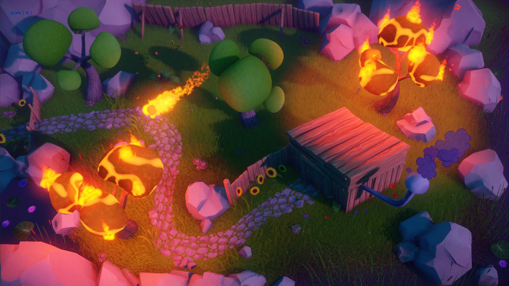

Изменения интерфейса кода
См. Важная информация CRYENGINE 5.3. Изменения данных и кода статью для получения дополнительной информации.
Если вы обновляетесь с CRYENGINE 5.2, прочтите Миграция с CRYENGINE 5.2 на CRYENGINE 5.3.
Основные моменты выпуска
CRYENGINE 5.3 теперь доступна для загрузки
Добро пожаловать в обзор нашего последнего крупного обновления, CRYENGINE 5.3 — и что это за релиз! Наша ключевая особенность — новый язык визуальных сценариев под названием Schematyc, который позволяет любому создавать игровые системы, используя предопределенные узлы. У нас также теперь есть поддержка популярного физического решения PhysX от NVIDIA, ряд значительных улучшений в нашем редакторе Sandbox, а также совершенно новая система объектов и браузер.
Следует также отметить, что в духе нашего нового подхода, ориентированного на сообщество, CE 5.3 включает в себя несколько функций, которые выпущены раньше обычного в виде бета-версий. Таким образом, вы все сможете сразу оставить свой отзыв, поскольку мы продолжаем улучшать и совершенствовать эти функции в будущих выпусках.
С учетом сказанного, давайте взглянем на некоторые основные моменты CRYENGINE 5.3:
Schematyc (бета-версия)
Schematyc — это основанный на узлах язык визуальных сценариев, призванный изменить способ построения игровых систем в CRYENGINE. Это дает дизайнерам возможность создавать новые функциональные возможности игрового процесса, используя набор строительных блоков, но без необходимости присутствия настоящего программиста на каждом этапе пути. Таким образом, это должно особенно принести пользу небольшим инди-командам, где мы знаем, что опытные программисты C++ часто могут быть редкостью, поскольку это позволяет каждому участнику команды помогать в написании сценариев игрового процесса.
Пример Schematyc «Lighten Up», позволяющий пользователям провести реверс-инжиниринг и изучить распространенные лучшие практики Schematyc: Легче!

Примечание. Это бета-версия с ограниченной функциональностью и узлами. Мы с нетерпением ждем ваших отзывов!
Редактор Sandbox
Наш новый редактор Sandbox на базе Qt, который мы выпустили вместе с CRYENGINE 5.0, теперь является единственным поддерживаемым редактором. Ранее предоставленный редактор Legacy (использующий старый интерфейс на основе MFC) теперь устарел и, следовательно, больше не доступен в будущем. Вы можете узнать больше об этом решении и нашем мышлении, стоящем за ним. в этом сообщении блога. Другие улучшения редактора Sandbox включают поддержку дисплеев High-DPI для более удобной работы и то, что мы называем «рабочим процессом F-клавиш», в котором мы сопоставили многие из наиболее часто используемых команд в движке с вашими функциональными клавишами.
Для тех из вас, кто только переходит на новый редактор Sandbox, мы подготовили страница, с которой вы сможете начать и покажу вам самые большие изменения в интерфейсе между новым и старым редактором Sandbox.
Переработка системы сущностей
В этом выпуске мы провели рефакторинг системы сущностей, чтобы создать перспективный и унифицированный способ расширения логики игровых объектов. Это достигается путем объединения предыдущих расширений и прокси-объектов игры в «компоненты сущностей». Компоненты могут быть прикреплены к любому объекту в любой момент их существования и могут быть созданы на C++, C# или Schematyc.
Расширение этих компонентов для создания сложных объектов можно увидеть в этом плейлисте, где мы переходим от написания и предоставления плагина CRYENGINE, а затем создаем компоненты для использования в нем.
Рефакторинг С#
Мы переписали интеграцию с C#, представленную в CRYENGINE 5.0. Это изменяет базовую функциональность и стиль, чтобы они больше соответствовали рекомендациям по кодированию .NET, чтобы мы могли обеспечить единообразный опыт разработки для разработчиков, имеющих большой опыт работы с C#. Также реализована поддержка новых функций, таких как возможность написания новых компонентов сущностей на C#.
CMake Система сборки
Раньше система сборки WAF служила основным инструментом сборки для компиляции CRYENGINE. Однако, чтобы упростить этот аспект движка, мы переключаемся на CMake в качестве нашей новой системы сборки для CRYENGINE.
Так что же такое CMake? CMake — это кроссплатформенный инструмент с открытым исходным кодом для создания независимых от компилятора сборок, который идеально соответствует нашей постоянной миссии по созданию CRYENGINE более открытого и управляемого сообществом.
Вы можете найти полную документацию для CMake в CRYENGINE здесь. Мы также подготовили несколько документация, посвященная переходу с WAF на CMake.
Встроенная поддержка PhysX
Технология PhysX от NVIDIA появится в CRYENGINE в версии 5.3 в виде бета-версии, это будет первый раз, когда пользователи будут иметь встроенную альтернативу нашему собственному пакету CryPhysics при создании своих игр. Это даст всем Cryengineers больше гибкости, чем когда-либо прежде, когда дело доходит до выбора правильного физического решения для уникальных потребностей их игр.
Для тех, кто с ним не знаком, NVIDIA PhysX — это масштабируемое многоплатформенное решение для игровой физики, которое поддерживает широкий спектр устройств и используется/используется во многих самых популярных сегодня играх и платформах.
Использование NVIDIA PhysX в CRYENGINE
Новая система активов (бета-версия)
Эта новая бета-версия — первый шаг на пути к будущему рабочему процессу в редакторе, управляемому браузером ресурсов. Благодаря этому использование Windows Explorer уйдет в прошлое при работе над проектами CRYENGINE.
В первоначальной версии CE 5.3 этот инструмент позволит вам искать что угодно в вашем проекте и импортировать ресурсы без необходимости использовать отдельные инструменты импорта за пределами Sandbox.
Хотите узнать больше о новом браузере активов и системе активов, управляемой метаданными? Вы можете сделать это с помощью нашей документации..
FBX Улучшения конвейера
Наш конвейер импорта FBX стал одним из самых популярных дополнений к CRYENGINE в этом году, и мы рады добавить еще больше функций в этом выпуске.
Во-первых, мы добавляем возможность создавать физические скелеты персонажей и рэгдоллов как часть рабочего процесса импортера, это позволит пользователям назначать узлы сетки в качестве прокси для костей.
Вторым большим улучшением является автоматическое создание физических прокси для геометрии static как часть рабочего процесса MeshImporter, что позволит пользователям впоследствии редактировать эти прокси.
Канал импорта FBX — яркий пример того, как отзывы сообщества могут повлиять на будущее развитие CRYENGINE, поэтому мы с нетерпением ждем ваших мыслей об этих новых дополнениях!

Рабочий процесс F-клавиши
В рамках версии Asset Browser мы сопоставили некоторые из наиболее часто используемых функций с функциональными клавишами, чтобы сделать рабочий процесс еще более быстрым и интуитивно понятным. Ниже приведен список short нескольких предоставленных сопоставлений:
- F1 — Справка/документация
- F2 — Обозреватель ресурсов (переключить)
- F3 — Найти
- F4 — перейти в редактор уровней (полезно для многих окон)
- F5 — перейти в игру.
- F7 — экспортировать в игру.
Поддержка мониторов High-DPI
Мы добавляем поддержку, чтобы сделать текст в редакторе Sandbox удобным и эффективным для пользователей мониторов High-DPI (например, экранов 4K).
Экраны с более высоким разрешением, особенно 4K, часто имеют значительно более высокую плотность пикселей, чем типичный экран 1080p. Это означает, что контент, который был разработан для чтения на экране 1080p, необходимо настроить, чтобы он занимал аналогичный объем физического пространства на мониторе 4K.
Пользователи заметили проблемы в предыдущих версиях редактора, требующие такой поддержки. Так что будьте уверены, теперь вы можете использовать CRYENGINE в разрешении 4K, пока не расплавите свой GPU.
Пользовательская аналитика
CRYENGINE 5.3 теперь включает систему пользовательского анализа (UAS). Мы ввели это, чтобы иметь возможность собирать собственные события редактора Sandbox и запуска игр. Собирая пользовательские данные, такие как;
- Какие инструменты Sandbox используются чаще всего
- Какие инструменты Sandbox используются не очень часто
- Какие инструменты Sandbox вообще не используются
- Как часто пользователи страдают от сбоев
- Каково среднее время загрузки
Мы будем лучше осведомлены о пользовательском опыте CRYENGINE и, следовательно, сможем лучше направлять наши технические разработки на нужды наших пользователей. Не беспокойтесь о данных, которые мы собираем: они будут использоваться только для внутренних целей и с целью улучшения пользовательского опыта CRYENGINE.
Универсальная система запросов (бета-версия)
В этом выпуске мы представляем бета-версию нашей новой универсальной системы запросов (UQS). Это система пространственных запросов, которую AI и другие системы могут использовать для того, чтобы задавать «умные» вопросы об окружающей среде.
Одной из особенностей этой системы является возможность полностью обеспечивать базовые строительные блоки для сложных запросов, например, кодом игры. Это упрощает и упрощает расширение. В будущем она заменит систему тактических очков CryAISystem (TPS).
Ожидайте новых обновлений UQS в будущем и его расширения в других системах, таких как Schematyc!
Шаблоны игр
- Новое: Использование устаревшего GameDLL изменено на новый игровой плагин – предполагает удаление CGameStartup, CEditorGame и использование только более новых систем.
- Новое: Шаблон изометрической игры — демонстрирует изометрический вид и базовый поиск пути AI.
- Новое: Плагин template — дает пользователям быстрый старт для создания нового плагина.
Анимация
Общая анимация
- Новое: Изменен вес перехода анимации на синусоидальный и исправлена проблема с линейным смешиванием слоев анимации. Введена переменная DefaultTransitionInterpolationMode для глобальной установки интерполяции.
- Новое: PoseModifier IkCCD — добавлена отладочная отрисовка.
- Новое: Удалены ненужные утверждения для файлов, не существующих в resourcelist.txt. Таким образом, теперь возможно переименование файлов-скелетонов без изменения resourcelist.txt, поскольку содержащиеся в них файлы не являются обязательными.
- Новое: Реализован интерфейс PoseModifierSetup для запроса модификаторов позы.
- Исправлено: Обновить относительное движение при зацикленной анимации.
- Исправлено: Выбор конкретной анимации для клавиши в Trackview запускает утверждение.
- Исправлено: Обработка экземпляра нового персонажа игнорирует полное обновление скелета. Это решает проблему поведения в многопользовательской игре, когда серверам и клиентам может потребоваться обновить персонажей, несмотря на видимость.
- Исправлено: Использование ручного поиска в событиях анимации, прерывающих очередь перехода.
- Исправлено: Добавлен отсутствующий nullcheck.
- Исправлено: Обновлено условие проверки неверного диапазона в CAttachmentSKIN::GetVertexTransformationData. Добавил пару утверждений по безопасности.
- Исправлено: Удалены зависящие от данных проверки во время выполнения, обеспечивающие согласованность активов вложений с вызовами серьезных фатальных ошибок.
- Исправлено: Потенциальное состояние гонки в CSkeletonAnim::PushPoseModifier — экземпляры модификатора, отправленные во время обработки анимации, теперь всегда добавляются в правильную очередь.
- Исправлено: Добавлена проверка количества отсутствующих вершин/индексов перед попыткой выделить фрагмент сетки рендеринга.
- Изменено: Имя параметра с ошибкой в XML-ридере IK.
- Изменено: Установите максимальное количество слоев анимации скелета по умолчанию на 32.
Character Tool
- Исправлено: Удалена постоянная сериализация состояния конкретного сеанса из PropertiesPanel.
Mannequin
- Исправлено: Переопределена функция выбора ресурсов анимации для фрагментов анимации.
- Исправлено: Фрагменты больше не удаляются, если их перетащить за пределы окна или дорожки.
- Исправлено: Удален набор избыточных проверок утверждений на соответствие условиям, которые уже имеют действительные пути управления обработкой ошибок.
- Исправлено: «Кнопка перехода к концу», удалена неиспользуемая переменная-член.
- Исправлено: Добавлена ранняя инициализация флага редактора для экземпляров персонажей, управляемых Mannequin, чтобы смягчить некоторые сценарии, в которых он не был установлен вовремя.
- Изменено: ActionScopes изменен с uint32 на uint64, чтобы можно было использовать более 30 областей.
AI
AI Система
- Новое: Введите MNM::Tile::ITileGrid и откройте навигационную сетку, доступную только для чтения, с помощью MNM::Tile::STileData.
- Новое: Представляем интерфейс MNM::TileGenerator::IExtension, позволяющий игровым проектам участвовать в генерации тайлов MNM.
- Новое: Интерфейсный метод для установки BehaviorTree.
- Новое: Регистрация именованных узлов BehaviorTree.
- Новое: Добавлен MNM::IMeshGrid::FindClosestTriangle.
- Новое: Добавлен MNM::IMeshGrid::QueryTriangles, который поддерживает пользовательские треугольные фильтры.
- Рефакторинг: Переместите структуры, используемые для данных тайлов, в CryCommon, откройте некоторые служебные функции.
- Рефакторинг: Удалить запросы о расстоянии до ближайшей точки, где они не нужны.
- Рефакторинг: Переименуйте параметр distSq в расстояние на NavigationSystem::GetClosestMeshLocation и MeshGrid::GetClosestTriangle, чтобы отобразить масштаб фактического значения.
- Рефакторинг: Код MeshGrid, который ищет ближайшие треугольники.
- Рефакторинг: Предоставьте способ адресации и доступа к соседним плиткам через MNM::IMeshGrid.
- Рефакторинг: Переименуйте MNM::Tile::ITileGrid в MNM::IMeshGrid.
- Рефакторинг: Отметьте функцию ValidateVolume и GetVolumeID для INavigationSystem как const.
- Рефакторинг: (MNM) Увеличьте номер версии экспортированного файла .bai MNM до 9.
- Рефакторинг: Переименуйте MNM::IMeshGrid в MNM::INavMesh, MeshGrid в CMeshGrid, исправьте имена переменных и комментарии.
- Исправлено: Установите TriangleId для первых/последних путевых точек пути и для путевых точек выхода за пределы сетки.
- Исправлено: Используйте расчеты расстояний в 3D вместо 2D в SmartPathFollower по запросу.
- Исправлено: (NavigationSystem) При создании нового уровня тома исключений, связанные с агентами, переносятся с предыдущего уровня, а не очищаются.
- Исправлено: (CAISystem::SendSignal) При отправке сигналов группе псевдогруппа также получала эти сигналы, из-за чего несвязанные агенты AI основывали свои решения на противоречивой информации.
- Исправлено: Украшение пути, обеспечивающее доступ к неправильным треугольникам на путях, проходящих через ссылки вне сетки.
- Исправлено: Сбой при попытке зарегистрировать объект без lua в системе AI.
- Исправлено: Внутренние потоковые узлы AISystem сделаны совместимыми с новой системой плагинов.
- Исправлено: (CoverSampler) Еще был крайний случай, когда после упрощения мы могли получить менее двух выборок.
- Исправлено: Сбой из-за доступа к IRenderAuxGeom основного потока из потока NavigationSystemBackgroundUpdate.
- Исправлено: Потенциальный сбой при делении на ноль во время протягивания струны поиска пути через очень маленькие треугольники.
- Исправлено: (MNM) Формы области навигации с одинаковыми именами, разрушающие объемы и сетки друг друга.
- Исправлено: (MNM) Тома исключений навигации не экспортированы.
- Исправлено: (MNM) Сбой при создании задания создания плитки из-за отсутствия граничного объема сетки.
- Исправлено: (Планировщик движения) Теперь повторный поиск пути, если мы полагаем, что предыдущий запрос поиска пути возвращается со своим результатом сразу после того, как блок UseSmartObject изменил свое состояние с «подготовки» (все еще прерываемый) на «перемещение» (и больше не прерываемый).
- Исправлено: Сбой, вызванный автоматическим клонированием данных каналов вне сети.
- Исправлено: (CSmartPathFollower) Когда вы собираетесь начать перемещение по пути, теперь учитывайте гораздо более высокий допуск по оси Z, чтобы найти начальный индекс на пути (это важно, когда все еще проходите SmartObject на высоте, существенно отличающейся от того места, где начинается предстоящий путь).
- Исправлено: (CAIObject) Динамически создаваемые объекты. Когда игра выходила из игры и возвращалась в режим редактирования, такие объекты, как гранаты, оказывались со свисающей ручкой в VisionMap.
- Зафиксированный: (OffMeshNavigation) Восстановление внешних ссылок, когда SmartObject разблокирован.
- Исправлено: CVehicleSeat::GetMovementState не учитывал масштабирование матрицы преобразования при вычислении векторов направления, в результате чего неединичные векторы попадали в CAIActor::SetPos.
- Исправлено: Обход нуля IPhysicalEntities при проверке линии огня.
- Исправлено: (Поверхности покрытия) Копирование поверхностей покрытия в редакторе приводило к несогласованности в свободном пуле на стороне AISystem, что приводило к сбоям при использовании динамических покрытий.
- Исправлено: (NavigationSystem) При экспорте карты также могли быть экспортированы недопустимые идентификаторы томов исключения, которые затем зависали бы при перезагрузке карты.
- Исправлено: (AISequence) Начальный узел теперь печатает предупреждение, если дизайнер забыл назначить объект этому конкретному узлу.
- Исправлено: (Узлы последовательности) Изменен способ реагирования узлов на неверные идентификаторы последовательностей, чтобы предотвратить ошибки, вытекающие из предыдущих ошибок.
- Изменено: (SequenceAgent) Теперь отображается всплывающее сообщение вместо сбоя подтверждения, когда дизайнер уровней назначил последовательности актер, не являющийся CAIActor.
Аудио
Аудио Общие
- Новое: Разделенные аудиообъекты и аудиопрослушиватели.
- Новое: Удален поиск по идентификатору.
- Новое: Поддержка FlowGraph для сущности области Audio, которая была перенесена в C++.
- Новое: Добавлены элементы управления звуком в качестве возможных свойств для сущностей.
- Новое: Добавлены все аудиообъекты в новую систему C++..
- Новое: (SDLMixer) Добавлен libmodplug 0.8.8.5 (скомпилирован только на Linux/Android из-за отсутствия поддержки C99 в MSVC).
- Новое: (SDLMixer) Обновите libmikmod до версии 3.3.10.
- Новое: (SDLMixer) Добавлен flac 1.3.1.
- Новое: Отсутствуют параметры раскрывающегося списка в области триггера звука.
- Рефакторинг: Удалена зависимость реализаций промежуточного программного обеспечения аудио от идентификатора аудиообъекта.
- Оптимизировано: Удалена функция сохранения имени отладки — теперь данные отладки сохраняются на объектах.
- Оптимизировано: Удалена переменная primaryMemoryPoolSize CVar, поскольку эта переменная описывала только комбинацию всех остальных пулов и поэтому ее не следует задавать вручную.
- Оптимизировано: Удален ненужный полиморфизм времени выполнения (выбран из audio_refactoring, но изменения скорректированы в соответствии с рекомендациями. Дополнительно исправлена ошибка и несоответствия в исходном списке изменений).
- Оптимизировано: Выполнение аудиопотока уменьшено примерно до 100 кадров в секунду, чтобы обеспечить синхронизацию с основным потоком и минимизировать нагрузку на физику за счет меньшего количества raycasts за игровой кадр.
- Исправлено: Возможный сбой при выполнении клавиш триггера звуковой дорожки.
- Исправлено: Слушатель и источники звука - оба были установлены на 0,0,0 после загрузки сохраненной игры.
- Исправлено: Проблема с приглушенным звуком после загрузки сохранения.
- Исправлено: Переключатели, rtpc и среды теперь корректно настраиваются при изменении.
- Исправлено: (nullptr) Доступ в реализации PortAudio.
- Исправлено: Когда выгрузка аудиофайлов с ошибкой memalloc повредила счетчик использования памяти. Кроме того, AFCM больше не выгружает файлы с подсчетом ссылок немедленно.
- Исправлено: Аудиообъекты по умолчанию, а также некоторые области не работают в игровых шаблонах — в игровые шаблоны добавлены Аудиообъекты и зависимости.
- Исправлено: FMOD В событиях Studio не учитывались значения препятствий и окклюзии при запуске.
- Исправлено: Прежде чем устанавливать информацию о смешивании громкости клипа, проверьте действительный идентификатор громкости клипа.
- Исправлено: Исправлено утверждение при обновлении аудио с помощью микшера SDL.
- Исправлено: Исправлена компиляция в Linux.
- Исправлено: Добавлены отсутствующие аудиообъекты в WAF и CMake.
- Исправлено: Свойство "InnerFadeDistance" не было должным образом экспортировано/импортировано для AreaBox, AreaSphere и AreaShape.
- Исправлено: Убрано утверждение, когда глобальная предварительная загрузка звука отсутствует.
- Исправлено: Убрано ненужное утверждение, когда аудиообъекты окклюзии и слушатель находятся слишком близко друг к другу.
- Исправлено: Сбой при завершении работы, когда класс игрока GameSDK обратился к недопустимому объекту, удален устаревший метод StopLoopingSounds.
- Исправлено: Сбой при изменении промежуточного программного обеспечения аудио во время выполнения. Модули реализации теперь имеют одинаковое имя класса модуля.
- Зафиксированный: Звуковое окружение не воспроизводится при использовании звуковых триггеров, специфичных для уровня.
- Изменено: Wwise SDK обновлен до версии 2016.2.0, сборка 5972.
- Изменено: Увеличена максимальная длина имен элементов управления звуком до 128.
- Изменено: Удалите модули динамических библиотек из микшера SDL - теперь все static.
- Изменено: Подключения FMOD Studio Snapshot к AudioTriggers теперь можно настроить на запуск или остановку.
- Изменено: Небольшая очистка в узлах Audio FlowGraph.
- Изменено: FG Узлы AudioTrigger теперь регистрируются или отменяются асинхронно в качестве прослушивателя событий аудиосистемы и регистрируются только в том случае, если выходной порт «Готово» подключается к чему-либо.
- Изменено: Из аудиокода удалены устаревшие макросы «PREVENT_OBJECT_COPY» и «DELETE_DEFAULT_CONSTRUCTOR».
- Изменено: Студия FMOD API обновлена до версии 1.08.14.
ACE (редактор управления звуком)
- Исправлено: Где ACE не загружал радиусы активности.
- Исправлено: Сбой при доступе к временным данным во время загрузки ACE.
- Исправлено: ACE иногда происходит сбой при открытии во время работы FMOD Studio или SDL Mixer.
DRS (система динамического реагирования)
- Новое: Добавлена локальная переменная, которая сохраняет приоритет произнесенной в данный момент строки, чтобы вы могли использовать ее в условиях, чтобы узнать, можно ли произнести другую строку или нет.
- Новое: Добавлен флаг, позволяющий действиям SpeakLine отменять родительский ответ в случае их отмены/пропуска (чтобы разрешить остановку диалогов, если их строку невозможно произнести).
- Новое: Добавлен флаг, позволяющий подавать сигналы действия SpeakLine при запуске/окончании/пропуске/отмене.
- Новое: Добавлена система очередей для диалоговых строк.
- Новое: DRS не загружает ответы и строки автоматически при создании, а теперь ожидает вызова Init игрой. Плюс исправлена потенциальная ошибка, при которой специальные действия регистрировались после того, как DRS уже загрузил все ответы.
- Новое: Добавлено полезное предупреждение о ссылках на несуществующие строки в действии SpeakLine.
- Новое: Добавлена возможность активировать/деактивировать удаление значений по умолчанию из сохраненных/сохраненных данных состояния.
- Новый: Текущее состояние строк (последний выбранный вариант) теперь можно сериализовать.
- Новое: Добавлен новый способ для однократных строк (по каждой строке).
- Новое: Оптимизирован принцип работы CancelSignal (чтобы можно было использовать действие CancelSignal в начале ответа, чтобы сначала остановить любой другой запущенный экземпляр).
- Новое: Добавлено новое свойство для каждого drs-актера, который начинает произносить строку «LastLineFinishTime», которое можно использовать для проверки момента молчания перед началом новой строки (чтобы не прерывать диалоги).
- Новое: Добавлен CVar drs_loggingOptions, чтобы включить запись в файл событий DRS (в нерелизных сборках).
- Оптимизировано: Поменяйте местами queuedSignals вместо того, чтобы перемещать их, чтобы избежать перераспределения.
- Исправлено: «Действие executeResponse» не отменяло выполняемый ответ.
- Исправлено: Изменен способ передачи сохраненного состояния через интерфейс — чтобы избежать передачи строк за границы модуля.
- Исправлено: Исправлена жалоба на CppCheck.
- Исправлено: Убедитесь, что узлы FlowGraph отменили регистрацию в качестве прослушивателя при уничтожении.
- Исправлено: Хэш имени AttachmentTag был кэширован, но не использовался.
- Исправлено: Сбой, когда не создаются коллекции локальных переменных (происходит только при особой настройке).
- Изменено: Отмена ответа теперь работает более эффективно.
- Изменено: Добавлен способ отменить все текущие ответы, кроме текущего ответа.
Ядро/Система
Общие сведения о двигателе
- Новое: (Schematyc Beta) Экспериментальный инструмент для создания игровых систем. Дает дизайнерам возможность создавать новые функциональные возможности многократного использования из набора строительных блоков, предоставленных программистами. В то время как FlowGraphs отлично подходит для сценариев уровней, Schematyc предназначен для обеспечения более ограниченного контроля над объектами внутри уровней. Вся логика управляется состоянием и контекстом, чтобы упростить информацию, предоставляемую дизайнерам, это значительно снижает задержку и позволяет вывести новые игровые системы за пределы стадии прототипирования без необходимости переписывать их на C++.
- Новое: Добавлены экземпляры дополнительных символов в es_debugAnim.
- Новое: Добавлен AutoComplete в es_debugAnim.
- Новое: Загрузка асинхронного уровня.
- Новое: Сгенерировано решение template — теперь автоматически задается правильный запускаемый проект VS.
- Новый: (DynArray) Добавлены функции замены и вставки. Переработаны все функции вставки, чтобы они могли принимать все возможные значения инициализации, включая значения по умолчанию и без инициализации. Теперь по умолчанию инициализируется T, как и std::vector. Аргумент EInit может указывать eZeroInit или eNoInit. Удалены функции _raw. Оптимизирован для перемещения значений температуры в массив. Используйте шаблоны с переменным числом вариантов и пересылку для упрощения замены, вставки и т. д. Оптимизировано изменение размера — перераспределение теперь происходит в два этапа, что сокращает перемещение данных до необходимого минимума.
- Новое: Поддержка масштабной формы для сочетаний клавиш Ctrl+C (Ctrl+C, Ctrl+V и т. д.).
- Новое: Добавлены недостающие части интерфейса C++11, реализованные на CryString.
- Новое: Добавлен CryVariant.
- Новое: Перестройте таблицу скан-кодов при изменении языка ввода.
- Новое: Рефакторинг Entity System — нет RenderProxy, нет физического прокси.
- Рефакторинг: putCharAscii заменен на GetInputCharUnicode. Раньше он возвращал информацию, отличную от ascii (текущая кодовая страница).
- Рефакторинг: Рефакторинг свойств путем объединения обработчика свойств и атрибутов в IEntityPropertyGroup, который можно реализовать один раз для каждого компонента сущности.
- Рефакторинг: Удалить вариант повышения из IReadWriteXMLSink.
- Рефакторинг: Удалить вариант повышения из CryNetwork.
- Рефакторинг: Удалить вариант повышения из IFlashUI.
- Рефакторинг: Удалить вариант повышения из IMovieSystem.
- Рефакторинг: Удалить вариант повышения из IFlowSystem.
- Рефакторинг: Исправления, когда Scaleform не включен.
- Рефакторинг: (DynArray) Реализован LocalDynArray. Оптимизированы StaticDynArray и FixedDynArray. Удален ResizeStorage.
- Рефакторинг: (SmartPtr) Замените непотокобезопасный возврат счетчика на NumRefs уникальной функцией, которая является потокобезопасной, поскольку вызывающий поток должен хранить последнюю ссылку.
- Оптимизировано: Повторите макросы OPT_STRUCT, чтобы использовать простые данные struct с автоматической инициализацией членов вместо сложных TOptVar template. Может использоваться с constexpr.
- Исправлено: Загрузка полной карты (лес или аэродром) вызывает подтверждение.
- Исправлено: Поддержка HTML отсутствует в CryGFxTranslator.
- Исправлено: Добавлено свойство «Скрыть» в GeomEntities (также добавлено в узел объекта geom FlowGraph).
- Зафиксированный: Поддержка режима Sandbox для IsometricPathfinding template.
- Исправлено: Запретить игровым проектам находить ресурсы в папке шаблонов движка.
- Исправлено: Движок, содержащий ссылки на два объекта веревки; RopeEntity теперь объединен с классом Rope Entity.
- Исправлено: В пакеты обновления проекта добавлен отсутствующий основной слой.
- Исправлено: Архетипы сущностей больше не будут воссоздаваться каждый раз при создании экземпляра архетипа Entity (это приводило к висячим указателям).
- Исправлено: Исправлено выполнение OoO с очисткой трафарета.
- Исправлено: Восстановите защиту включения _CRY_ARRAY_H, чтобы исправить сторонние включения.
- Исправлено: Исправлен рендеринг с GP=2 и MAP_DISCARD (т. е. DX11 и DXOrbis).
- Исправлено: Предварительный кэш шейдера теперь также компилируется из текста, если шейдер отсутствует в кеше. Это исправляет сбой при загрузке PS4, когда кэш отсутствует. Примечание. Scaleform отображается неправильно при загрузке без кеша, но работает с заполненным кешем.
- Исправлено: Выберите правильную настройку видового экрана в рендерере.
- Исправлено: Сбой при выходе из игрового режима в Sandbox.
- Исправлено: bSkipRenderer в качестве параметра запуска. Разрешить выполнение среды выполнения без средства рендеринга.
- Исправлено: UIElements не загружены в CE 5.1.0.
- Исправлено: Скрытый в Game-Flag для GeomEntities ничего не делает.
- Исправлено: Сбой во время инициализации механизма, если не предоставлено шифрование PAK.
- Исправлено: (TEXTBOX CURSOR) Курсор не отображается в текстовом поле во время редактирования.
- Исправлено: Assert не сработал после первого запуска.
- Исправлено: Подсчет ссылок некэшируемых объектов устройства.
- Исправлено: Освободить постоянную буферную кучу при выходе.
- Исправлено: Добавлены модульные тесты DynArray для проверки поведения элементов при создании/уничтожении/перемещении.
- Зафиксированный: DynArray более корректно обрабатывает перемещение и замену. Классы хранения массивов теперь имеют освобождение памяти вместо деструкторов, фиксирующих поведение при перемещении. Исправлено выравнивание в HeapAllocator::Array. Добавлены утверждения выравнивания.
- Исправлено: Поведение в CRenderProxy::GetRenderMaterial, когда часть ID не указана.
- Исправлено: Событие изменения состояния не было отправлено физикой при создании PhysicsProxy.
- Исправлено: Запуск многопользовательской игры в GameLauncher вызывает подтверждение.
- Исправлено: Чтобы предотвратить непреднамеренное удаление символов yasli, дополнительно обновлен внутренний CMake, позволяющий обновлять VS IDE при изменении флагов.
- Исправлено: Возрождение на аэродроме вызывает сбой.
- Исправлено: Множественное определение друга в классе GCC 4.9.3.
- Исправлено: (3DEngine) Объект «Вентилятор» не выполняет свои сценарии.
- Исправлено: Объекты Geom исчезают при масштабировании.
- Изменено: Поддержка контроллера PS4 в Windows при наличии Orbis SDK (MSVC, 2015 г.).
- Изменено: Скорректирован некоторый код макроса CRY_ASSERT для обеспечения единообразия кода.
- Изменено: Переименование хранилища массивов и переформатирование однострочных функций inline. Базы хранения теперь реализуют начало и конец. Удалены медленные макросы MEMSTAT. Изменены некоторые внутренние определения типов. Несколько производных типов заменены псевдонимами типов.
- Изменено: Изменён порядок инициализации компонентов Engine.
- Изменено: Защищенное использование gEnv->pGame.
- Изменено: Глобально заменен gEnv->pGame->GetIGameFramework на gEnv->pGameFramework.
- Изменено: Удалите методы GetIGame и GetIGameFramework из ISystem.
- Изменено: Удалите предупреждение, если Entities.xml не удалось найти.
Общий
- Рефакторинг: Замените макрос COMPILE_TIME_ASSERT на static_assert из C++ 11.
- Рефакторинг: Замените макрос STATIC_ASSERT на static_assert из C++11.
- Рефакторинг: Удалите неиспользуемые функции GetPort... из интерфейса IFlowGraph.
- Рефакторинг: Удалите метаутилиты namespace и замените их эквивалентами из STL.
- Рефакторинг: (CryEntitySystem) Стандартизированная регистрация свойств объектов C++ и C# в реализации IEntityPropertyHandler по умолчанию.
- Рефакторинг: Замените использование gEnv->pGame на gEnv->pGameFramework->GetIGame, чтобы облегчить прекращение поддержки IGame и IGameStartup.
- Рефакторинг: Устранена необходимость использования HINSTANCE, специфичного для Windows, в параметрах инициализации системы.
- Рефакторинг: Представляем новое определение CryGetCurrentModule для унификации использования на разных платформах.
- Рефакторинг: Устраните необходимость в функции Release в компонентах сущности.
- Рефакторинг: Удалите неявное объявление конструкторов и деструкторов при использовании ICryUnknown.
- Исправлено: Исправлено &&= для себя в smartptr.
- Исправлено: Не полагайтесь на неопределенное поведение встроенных функций поиска битов.
- Исправлено: Предупреждение о компиляции в IAttachment.h.
- Изменено: Сделайте так, чтобы адрес распределения был выровнен не только по размеру.
- Изменено: IIndexedMesh.h требует включения Cry_Geo.h перед собой.
- Изменено: Сброс и замена smart_ptr выполняются немного быстрее при выполнении операции идентификации.
- Изменено: Удалены ненужные функции IEditorGame.
Система
- Новое: Предоставьте возможность переключения между типами источника отслеживания VR — пол и уровень глаз. Это изменит поведение по умолчанию с уровня глаз на уровень пола — см. hmd_tracking_origin, чтобы вернуться обратно.
- Новое: Обновлены обнаруженные флаги CPU для новых функций, объединен ненужный дублированный код и определения. Запишите функции CPU в одну компактную строку. Удалите устаревший код SQRT_TEST.
- Новое: Используйте платформу Android SDK 23.
- Новое: Добавлен Crymath::sign и Signnz (заменяющие некоторые функции sgn и sgnnz).
- Новое: Добавлены функции SSE shuffle<> и get_scalar<> (замена ExtractI32 и ExtractF32), to_v4<> для упрощения преобразования, перегрузки NumberValid.
- Новый: Дифференцированные векторные типы signed и unsigned int, перегруженные функции и операторы. Добавлены утверждения check_range для конверсий. Возврат к одному типу маски сравнения SSE.
- Новое: Добавьте вспомогательную функцию CCryFile::WriteType.
- Новое: Поддержка запуска Engine без реализации IGame.
- Новое: Менеджер проекта теперь автоматически устанавливает «sys_game_name» на основе настроек файла CryProject.
- Новое: (Linux) Используйте clang 3.8.
- Рефакторинг: (Linux, Paths) Исправлено, когда абсолютные пути к файлам были полностью строчными. Путь к корню движка должен оставаться нетронутым, хотя пользователи могут хранить движок в папках с заглавными буквами.
- Рефакторинг: Рефакторинг HMD Manager для поддержки внешней регистрации реализации VR.
- Рефакторинг: Не обновляйте подсистему физики во время асинхронной загрузки.
- Рефакторинг: Перемещены некоторые функции и изменен solve_quadratic для работы с типами SIMD.
- Рефакторинг: Генератор случайных чисел перенесен из глобального модуля в CrySystem, чтобы предотвратить необходимость повторного заполнения каждого модуля/плагина вручную.
- Оптимизировано: Замените использование CryLock на CriticalSection на SRW (удалено: поддержка Vista).
- Оптимизировано: Добавлено больше функций для SSE4. Неправильный флаг заменен на CRY_COMPILER_SSE4.
- Исправлено: Изменен диспетчер плагинов для работы с новой инициализацией моно-библиотеки.
- Исправлено: Инициализируйте переменную sys_intromoviesduringinit.
- Исправлено: Пропустить инициализацию помощников Scaleform в режиме генерации шейдерного кэша.
- Исправлено: (Linux) Исправлено переполнение стека RenderThread. Увеличение стека: 128 КБ -> 256 КБ.
- Исправлено: (CryMemory) Распределитель сегментов вычисляет правильный выделенный размер.
- Исправлено: Добавлена проверка висячего указателя (gEnv->pRenderer) в выделенном режиме.
- Исправлено: Невозможно выполнить выборку в потоках, отличных от «Основного».
- Исправлено: (Android) Условие использования геометрии и вычислительного шейдера.
- Зафиксированный: Пропустить инициализацию профилировщика загрузки в режиме ShaderCacheGen.
- Исправлено: (BootProfiler) Используйте правильный тип идентификатора потока, устанавливает для CV_sys_bp_time_threshold ноль во время выполнения.
- Исправлено: Исправлено разрешение символов для Xbox One.
- Исправлено: Восстановлено ограничение аргументов для Crymath asin и acos и удалено избыточное ограничение в нескольких вызовах. В SoundEngineUtil изменен asin на asin_tpl, чтобы исправить FPE.
- Исправлено: Экспортируйте функции выделения Memory Manager из Launcher в монолитные сборки, чтобы динамические библиотеки DLL, такие как средства рендеринга, могли их импортировать.
- Исправлено: Win32, отключив SSE — позволяет избежать ошибок компиляции выравнивания, которые в любом случае не так эффективны.
- Исправлено: gcc, добавив опцию льняного векторного преобразования в WAF, сделав поведение приведения SSE таким же, как и в clang.
- Исправлено: Прочитать конец буфера, если включена фильтрация спама в журнале.
- Исправлено: (Orbis) SVOGI поддерживается на PS4 и включен для компиляции.
- Исправлено: (Orbis) Исправлено обновление региона 3D-текстуры. Исправлена поддержка огромных пиксельных шейдеров.
- Исправлено: FrameProfile WaitTimers не были сброшены правильно.
- Исправлено: (Linux) Средство запуска Linux пытается загрузить файл CryAction без расширения имени файла.
- Исправлено: Сбой во время выключения.
- Исправлено: Возможный сбой при построении KD-дерева.
- Исправлено: Загрузка плагина прерывается, когда один плагин не загружается.
- Исправлено: Crashrpt static сборка библиотеки.
- Исправлено: Корректная передача ввода Юникода при использовании внутриигровой консоли в игровом режиме Sandbox. Ранее здесь передавался 8-битный символ с расширенным знаком (который был бы недействителен для символов, отличных от ASCII).
- Исправлено: (Xbox One) Игра вылетает/зависает из-за утечки памяти.
- Исправлено: (Clang) Изменения в соответствии с Clang 3.8.2.
- Исправлено: (стандарт GNU 3.8): ошибка static_assert: «Распределитель::value_type должен быть того же типа, что и value_type».
- Изменено: (Android) Исправлена ночная компиляция сборки Android (теперь используется Clang, например WAF).
- Изменено: установите sys_streaming_use_optical_drive_thread на ноль.
- Изменено: установите для sys_float_exceptions значение 0 по умолчанию.
- Изменено: установите для sys_asserts значение 1 по умолчанию (кроме режима выпуска).
- Изменено: установите для r_displayInfo значение 1 по умолчанию (режим выпуска меняет это значение на 0).
- Изменено: установите для log_IncludeTime значение 1 по умолчанию.
- Изменено: установите для sys_PakLogInvalidFileAccess значение 0 по умолчанию.
- Изменено: Увеличьте некоторые размеры стека, чтобы предотвратить потенциальное переполнение стека лицензиатами.
- Изменено: (Android) Вместо GameSDK будет загружен жесткий код gamezero.
- Изменено: Увеличьте потенциальное максимальное количество рабочих/физических потоков до логического, а не физического количества ядер.
- Изменено: (Android) Настройте функцию LoadLibrary, чтобы разрешить загрузку имен динамических библиотек без unix-подобных библиотек до или после исправления. Например, динамическая библиотека игр.
- Изменено: (BootProfiler) Включить маркеры двигателя для режима frame_threshold.
- Изменено: MemReplay 1.11.
- Изменено: Уменьшены зависимости Cry_Math.h #include. Добавлено множество дополнительных модульных тестов SSE и не-SSE.
- Изменено: Удалено определение ENABLE_CRASH_HANDLER, новая переменная CVar sys_enable_crash_handler.
- Изменено: (Orbis) Установите значение по умолчанию r_multithreadeddrawing на 4.
- Изменено: Удалите предупреждение, если editor.cfg или game.cfg не существует.
- Изменено: (Контейнеры) Убедитесь, что VectorMap использует ключ "const" в ключе/значении распределителя std::pair.
- Изменено: (JobManager) Переместите уведомление из блока мьютекса protected, этот шаблон заставляет поток рендеринга конкурировать больше, чем следовало бы в некоторых неудачных случаях планирования.
WAF
- Новое: Используйте встроенную поддержку проекта Android VS 2015 Update 3.
- Новое: Расширение SDL2 для Android.
- Новое: Разрешить компиляцию проектов Android в немонолитном режиме.
- Новое: Сборка Android с помощью Clang (и GNU STL).
- Новое: Добавьте поддержку protobuf.
- Рефакторинг: Прекратите поддержку VS Android Tegra.
- Исправлено: Для монолитных сборок убедитесь, что библиотека static, которая является частью сборки, подключается к монолитному хосту только один раз.
- Исправлено: Не создавайте библиотеки static, которые не связаны в окончательную dll/исполняемый файл.
- Исправлено: Явно укажите «gcc-4.9»/»g++-4.9» в качестве компилятора.
- Исправлено: Исправлена обработка file_name_override при связывании библиотек static.
- Исправлено: Показать все использованные проекты в решении VS.
- Исправлено: Сборка нескольких проектов. Вторая сборка проекта была проигнорирована при анализе зависимостей use_module.
- Исправлено: (WindowsLauncher) Включите библиотеку JSMN с помощью директивы use_module.
- Изменено: Не создавайте решение MSVS на компьютерах под управлением Linux.
- Изменено: Показывать страницу проектов на первой странице при открытии параметров WAF.
- Изменено: Обратите внимание, что перераспределение mfc140.dll из Windows/system32 допускается (https://msdn.microsoft.com/en-us/library/ms235264.aspx).
- Изменено: В сборку Linux добавляется Wno-unused-result, чтобы предотвратить ошибку «игнорирования возвращаемого значения int scanf(const char*, ...), объявленного с атрибутом warn_unused_result».
CMake
- Новое: В сборку CMake добавлены проекты CESharp.
- Новое: Внедрить интеграцию VS с Android и отказаться от поддержки VS Tegra.
- Новое: Используйте включенное по умолчанию состояние MSVC для флага /INCREMENTAL.
- Новое: Магазин решений в solutions_cmake.
- Новое: Добавлен родной VS Android.
- Новое: Добавлен файл CMakeSettings.json за VS 2017 года RC.
- Новое: Добавлен CryLink в CMake.
- Новое: Добавлены скрипты Buildbot и Jenkins.
- Новое: Добавлена поддержка Linux (x64).
- Рефакторинг: Переименован в CRYENGINE_DIR заглавными буквами.
- Рефакторинг: RemoveAndroid Поддержка Tegra. Вместо этого используйте собственный VS Android.
- Оптимизировано: Удалите предварительно скомпилированные двоичные файлы игры template и обновите скрипты, чтобы скомпилировать их как часть ночных сборок.
- Оптимизировано: Выполните 150 параллельных заданий ниндзя вместо 10.
- Исправлено: Версия продукта не отображается в диалоговых окнах «О программе» и «Свойства».
- Исправлено: Добавлен отсутствующий проект AudioSystem.
- Исправлено: Tools\CMake\toolchain\xboxone\XBoxOne-MSVC.cmake: переименован в Game.exe -> GameLauncher.exe, чтобы исправить "ошибку APPX0703: файл ссылок на манифест 'Game.exe', который не является частью полезных данных".).
- Исправлено: GCC: не используйте предупреждения C++ в коде C.
- Исправлено: В Linux скопируйте файлы времени выполнения ncurses в выходной каталог.
- Исправлено: Убедитесь, что MSBUILD компилирует проекты параллельно.
- Исправлено: Исправьте флаги GCC.
- Исправлено: Целевой путь средства запуска Windows.
- Исправлено: Сборка Sandbox включена в сборках public, где папка EditorQt недоступна.
- Исправлено: Wwise Подборка CMake для Android.
- Исправлено: Копируйте библиотеки ncurses только в Linux, а не в Windows.
- Исправлено: Исправлена компиляция CMake для Sandbox.
- Исправлено: (Физика) Добавьте недостающий путь в BuildEngine.cmake (артефакт слияния).
- Исправлено: Обходной путь для хакерской атаки CMake, которая не обнаруживает Clang.
- Исправлено: Ninja теперь также напрямую использует компоновщик (чтобы соответствовать MSBuild).
- Исправлено: Проблемы связывания статических библиотек для монолитных конфигураций.
- Изменено: Добавьте компиляцию PhysX в buildbot/trybuild и jenkins/nightly.
- Изменено: Не развертывайте файлы Mono при каждой компиляции, это будет обрабатываться системой сборки.
- Изменено: Параметры очистки Windows MSVC.
- Изменено: Разрешить создание нескольких игровых проектов одновременно.
Общие действия
- Новое: Автоматически регистрировать профиль планирования для Актеров и GameRules — устраняет необходимость в EntityScheduler.xml в GameZero/пустой игре.
- Новое: Добавлена новая переменная cl_ViewApplyHmdOffset для поддержки отключения смещения ViewSystem VR по умолчанию — на случай, если игра решит реализовать собственное поведение.
- Новое: Предоставьте IFlowSystem::HasRegisteredDefaultFlowNodes для поддержки регистрации узлов после начальной инициализации.
- Рефакторинг: Используйте существующую переменную CVar cl_initPlayerActor для управления использованием IActor во время установления контекста.
- Рефакторинг: Унифицировать логику запуска игровой среды в новом методе StartEngine.
- Рефакторинг: Переместите инициализацию представления по умолчанию в IGameObject::CaptureView вместо принудительного использования системы просмотра для всех игр.
- Рефакторинг: Устраните необходимость в CVar cl_initClientActor, обеспечив единообразное поведение движка, когда Actor доступен/недоступен.
- Исправлено: Монолитное поведение сборки для узлов плагина/игры.
- Исправлено: Расширения платформы не выпускаются в порядке, обратном созданию.
- Зафиксированный: Плохой доступ к памяти в AnimatedCharacter.
- Исправлено: Реализация GameSessionHandler::ShouldCallMapCommand по умолчанию не работает, если CryLobby отключен.
- Исправлено: Убрано утверждение для ортонормированной матрицы транспортных средств, поскольку разрешено масштабирование.
- Исправлено: Удаление расширения в файлах UI.
- Исправлено: Сброс FlowGraph в редакторе.
- Исправлено: Убрано ненужное утверждение, которое срабатывало при первом нажатии.
- Исправлено: autoexec.cfg больше не выполнялся при запуске из Sandbox.
- Исправлено: Сломан шаг фрейма вручную и код перенесен из игры в CryAction.
- Исправлено: Загрузка фиксированной длины временного шага в демо-рекордер.
- Исправлено: Игра не инициализируется, когда игровой модуль был монолитно связан с лаунчером. Это вызывало странные проблемы из-за неинициализированного состояния, в частности, оружие/предметы не появлялись в GameSDK.
- Исправлено: Объект AudioListener пытается сериализовать себя, несмотря на установленный флаг ENTITY_FLAG_NO_SAVE.
- Исправлено: Неправильный тип данных выходного порта в узле потока EnterVehicle.
- Исправлено: Сбой при отстыковке FragmentEditorPage в Mannequin.
- Исправлено: CActionMap::IsActionInputTriggered блокирует ввод, если gEnv->pTimer возвращается во времени (например, из-за сериализации) и onHold равен 1 в карте действий.
- Исправлено: Сбой при выключении.
- Исправлено: Предупреждение игры выдается, если Scripts/GameObjectSerializationOrder.xml не существует.
- Исправлено: Сбой, связанный с материальными эффектами в CryAction.
- Исправлено: Возвращает жестко закодированный идентификатор локального игрока на GetClientEntityId в качестве запасного варианта.
- Исправлено: Удален косвенный вызов утверждения, требующий, чтобы действия не содержали недопустимые идентификаторы фрагментов в момент постановки в очередь и установки, что является прекрасно поддерживаемым сценарием.
- Исправлено: Удалена собственная реализация обработки повреждений из CVehiclePartTread для повторного использования возможностей базового класса. Удалены проверки значения ущерба из логики изменения состояния CVehiclePartBase, чтобы учитывать детали реализации производных классов. Удалены другие лишние методы.
- Зафиксированный: Отключены тесты времени выполнения CAnimatedCharacter.
- Исправлено: Удалена зависимость MannequinObject от устаревшего скрипта Lua. Свойства пользователя перенесены в IEntityPropertyGroup. Изменен CMannequinObject для прямого наследования от IEntityComponent.
- Исправлено: Физика не работает в GameTemplates без gamedll.
- Исправлено: Адаптирован CVehiclePartAnimatedJoint для работы с новым временем обновления анимации CGA. Удален теперь уже избыточный вызов обновления из CVehicleSeatActionRotateTurret.
- Изменено: Добавлено предупреждающее сообщение, когда указанная игровая dll не может быть загружена правильно.
- Изменено: Удалена устаревшая реализация CameraSource в CryAction.
- Изменено: Исправление ActionListener, позволяющее прослушивать событие OnHold.
- Изменено: CFlowNode_InputActionListener: удалена лишняя строковая конструкция.
FlowGraph
- Новое: Добавлен новый узел FG для сопоставления шаблонов на основе подстановочных знаков.
- Новое: Узел PlayAnimation поддерживает ввод пользовательского множителя скорости.
- Новое: Добавлено свойство «Скорость» в узел «PlayAnimation» FlowGraph.
- Новое: Сглаживание переходов анимации при включении и отключении цепочки целей.
- Новое: Обновите несколько узлов, чтобы они могли принимать сустав ID в качестве входных данных, вместо того, чтобы заставлять дизайнеров просматривать имена суставов (полезно, поскольку результаты raycast уже дают им идентификаторы суставов).
- Новое: В узел PlayAnimation добавлен ввод, позволяющий указать, какой процент составляет AlmostDone.
- Новое: Добавьте новый узел «Математика:SetInteger».
- Новое: Добавьте операции перекрестного и скалярного произведения в узел Vec3:Calculate.
- Новое: (Модули FG) Редактируйте порядок портов модулей с помощью перетаскивания.
- Новое: (Модули FG) Практический способ обработки идентификаторов экземпляров.
- Новое: Добавьте селектор входного порта для имен модулей.
- Новое: (Модули FG) Новый узел для получения количества экземпляров активных модулей.
- Новое: Глобальный контроллер экземпляров для модулей FlowGraph.
- Новое: Обновлен дизайн модулей FlowGraph.
- Новое: Устранена необходимость в игровых проектах содержать замены FlowGraph и XML-файлы черного списка.
- Рефакторинг: Узел ActorPlayerLink сломан — помечен как устаревший.
- Рефакторинг: «Перейти к определению модуля» теперь находится в контекстном меню для узлов вызова и любого порта узла, который является именем модуля.
- Рефакторинг: Пересмотрено отображение отладки для модулей FlowGraph.
- Рефакторинг: Модули FlowGraph, которые могут постоянно выводить данные, не требуя их завершения.
- Оптимизировано: Переставьте члены структуры CFlowData так, чтобы они были более удобными для заполнения.
- Оптимизировано: (Модули) Предварительно назначьте порты модуля и отделите входы от выходов.
- Оптимизировано: (Модули) Не перестраивайте конфигурацию порта во время выполнения, поскольку она может измениться только во время редактирования.
- Исправлено: Сбой в FlowGraph, когда узлы пытаются вывести данные, когда их следует удалить, из-за плохо реализованных методов клонирования.
- Исправлено: Критическая Flowgraph-ошибка на платформах, отличных от Windows.
- Исправлено: Сбой при выходе из уровня, вызванный модулями FG.
- Исправлено: Опечатка в валидаторе входного порта модуля FG.
- Исправлено: Маскирование текстов описаний узлов для модулей FG для уменьшения размера исполняемого файла выпуска.
- Исправлено: Глобальные узлы вызовов выводят «-1» вместо недопустимого экземпляра ID.
- Исправлено: Глобальный реестр узлов управления, когда узлы вызовов изменяются во время выполнения или используются внутри модуля, который удаляется.
- Исправлено: Общие исправления и настройки модулей FG.
- Исправлено: Дважды щелкните узел вызова; выбирает связанный объект, а не граф модуля.
- Исправлено: Обновите начальные соединения для исходного графа модуля по умолчанию.
- Исправлено: Узлы вызова, выводящие все порты при успешном завершении.
- Исправлено: Проблемы с узлом модуля FG InstanceCountListener.
- Исправлено: Принимайте только действительные имена портов для модулей FG.
- Исправлено: Ввод:ActionMaps:ActionListener отмените регистрацию правильно, чтобы предотвратить сбои при уничтожении узла, например. из модулей.
- Исправлено: Substitutions.xml не работает.
- Исправлено: Функция GetPortString и ее использование.
- Исправлено: Преобразование типа ввода сущности на узлах сущности FlowGraph.
- Исправлено: Правильно установите флаг принудительного обновления на узле PlayAnimation FG.
- Исправлено: Принудительно обновить объект, если PlayAnimation FG узел принудительно обновит скелет.
- Изменено: Анимации:PlayAnimation теперь совместимы с AISequence.
- Изменено: FG Модули: настройте экран отладки модулей так, чтобы он был виден на PS4.
Система кино
- Исправлено: Неправильное удаление sys_intromoviesduringinit.
- Исправлено: Ошибка утверждения при воспроизведении двух анимаций, при этом одна анимация зацикливается.
- Исправлено: Все ролики в Вудленде не работают.
Игра
- Рефакторинг: Переместите инициализацию карты действий по умолчанию с CryAction на GameSDK.
- Исправлено: Утверждение срабатывает в сетевой игре после смерти на пользовательской карте без точки наблюдения.
- Исправлено: Утверждения в Vehicle/VehicleSeat.
- Исправлено: Утвердите в лобби UI при вызове лагометра.
- Исправлено: (MP) Утверждение не удалось при полете на вертолете.
- Исправлено: Лестницами нельзя было пользоваться сверху.
- Исправлено: (MP) Другие игроки по умолчанию не меняются.
- Исправлено: Команда «Карта» из autoexec.cfg перезаписывается, а карта «пример» загружается при запуске.
- Исправлено: Вылет при завершении работы после посещения многопользовательского лобби.
- Исправлено: Невозможно использовать транспортные средства в мультиплеере.
- Исправлено: Передвигаться по аэродрому невозможно.
- Исправлено: Утверждение при стрельбе из Tank-MG в мультиплеере.
- Исправлено: Утверждение и сбой при убийстве в мультиплеере.
- Исправлено: Различные утверждения многопользовательской игры в GameSDK.
- Исправлено: (MP) Утверждения игры при использовании оружия, VehicleSeats.
- Исправлено: (MP) Утверждение о возрождении игрока.
- Исправлено: Игрок телепортировался на место машины, выпрыгивая из движущегося HMMWV.
- Исправлено: Порог для проверки OrthonormalRH, чтобы избежать утверждения.
- Исправлено: При стрельбе из дополнительного оружия танка в течение short звук пулемета будет воспроизводиться вечно.
- Исправлено: Узел FG "Миникарта:EntityPos": мог обрабатывать только один объект, но использовался более чем для одного, таким образом ошибочно переназначая m_entityId и вызывая сбой утверждений.
- Исправлено: FlowGraph сломан в GameZero.
- Исправлено: GameSDK поведение при завершении работы.
- Исправлено: На стереовыходе CVar при изменении функтора не отменяется.
- Исправлено: Ошибки вывода движка, если игра не предоставила библиотеки Libs/UI/TexturePreloads.xml.
- Исправлено: Удален GeomEntity, поскольку теперь он является частью плагина CryDefaultEntities.
- Исправлено: Кат-сцена с опцией «отключить UI» приводит к запуску нескольких утверждений.
- Исправлено: При выходе из аэродрома происходит сбой на Xbox One (InputActionListener flownode может привести к сбою движка при попытке доступа к устаревшей информации об объекте).
- Исправлено: Маркеры AI на HUD не были добавлены должным образом.
- Исправлено: Всплывающее окно взаимодействия отображается во время взаимодействия.
- Исправлено: (Sandbox) Оружие агента AI больше не исчезает после выстрела.
- Исправлено: Правильно отключайте систему правил игры при изменении размера местности.
- Исправлено: Исправлено потенциальное использование висячего указателя контроллера действий при уничтожении предметов.
- Исправлено: Утверждение в AfterMatchAwards.
- Исправлено: Эффекты, созданные объектом торнадо, отображались дважды — выполнялись утверждения в задании ComputeVertices.
- Исправлено: Бег с гранатами от третьего лица заставляет HUD двигаться.
- Изменено: Создайте немонолитную версию Android (WAF).
- Изменено: Удалите большую часть логики из запуска GameZero.
- Изменено: Сделайте игру ответственной за регистрацию своих игровых узлов.
- Изменено: Загрузите пример карты GameZero без предупреждений.
С#
C#.Ядро
- Новое: Продлите MathHelpers.
- Новое: Обработка карты действий.
- Новое: Внедрите сериализатор домена для будущего использования при перезагрузке.
- Новое: Поддержка сериализации всех полей static в сборке.
- Новое: Платформа Core теперь автоматически генерирует базы данных отладки при сборке.
- Новое: Добавьте помощник DebugDraw для простого рисования примитивов и текста с течением времени (обертка IPersistantDebug).
- Новое: Реализация управляемого класса Vector3 — заменяет варианты использования автоматически создаваемого класса Vec3, который всегда вызывал C++ для каждого выражения.
- Новое: Внедрить управляемый класс Vector2 — заменяет варианты использования автоматически создаваемого класса Vec2.
- Новое: Внедрить управляемый класс Quaternion — заменяет варианты использования автоматически создаваемого класса Quat.
- Новое: Реализуйте управляемый класс Angles3.
- Новое: Внедрить управляемый класс Vector4 — заменяет варианты использования автоматически создаваемого класса Vec4.
- Новое: Внедрить управляемый класс Matrix3x4 — заменяет варианты использования автоматически создаваемого класса Matrix3x4.
- Новое: Создавайте сборки C# с помощью CMake и компилятора Mono.
- Новое: Добавьте NUnit в загрузочную загрузку SDK.
- Новое: CryEngine.Базовая сборка теперь может видеть внутренности CryEngine.Common, чтобы сократить использование отражения.
- Новое: Предоставьте возможность добавлять внутренние вызовы вручную вместо использования SWIG.
- Новое: Повторная интеграция перезагрузки плагина C# — отключена в выпуске 5.2.0 из-за рефакторинга системы плагинов.
- Новое: Подвергните WIP CryMono API воздействию CryCommon.
- Новое: Реализовать диалог обработчика управляемых исключений.
- Новое: Платформа C# Core теперь добавлена в решение Visual Studio CMake как обычный внешний проект.
- Новое: Исключения теперь выдаются, когда методы не найдены в собственной реализации IMonoClass.
- Новое: Добавьте поддержку вызова управляемых методов по описанию метода через интерфейсы IMonoClass и IMonoObject.
- Новое: Реализовать перезагрузку сценария 2.0 — сериализует все объекты в доменах приложений перед выгрузкой, а затем восстанавливает после перезагрузки измененных сборок. Это позволяет перезагружать код C# во время игры, а не выбрасывать его и перезапускать игровой цикл, как если бы программа запуска была перезапущена.
- Рефакторинг: Незначительная уборка.
- Рефакторинг: Рефакторинг системы сущностей в соответствии с основными рекомендациями .NET.
- Рефакторинг: Отформатируйте основную библиотеку в соответствии с основными рекомендациями .NET.
- Рефакторинг: Очистите реализацию IEntityComponent.
- Рефакторинг: Удалить класс Logger — вместо этого используйте общие функции журнала.
- Рефакторинг: Унифицировать обработку управляемых классов, прослушивающих события C++, — позволяет легко отменить их регистрацию для перезагрузки сборки.
- Рефакторинг: Рефакторинг камеры, чтобы она стала классом static, а не компонентом.
- Рефакторинг: Переместите Application.UIPath в UIElement.DataDirectory.
- Рефакторинг: Переместите Application.DataPath в FileSystem.DataDirectory.
- Рефакторинг: Разделите логику сущности на один файл для каждого типа.
- Рефакторинг: Разделите System.cs на один файл каждого типа.
- Рефакторинг: Удалите компонент приложения — вместо этого отдайте предпочтение логике в ICryEnginePlugin.
- Рефакторинг: Переместите настройку сцены и компонентов в UI namespace — теперь используется только для решения C# UI.
- Рефакторинг: Адаптация Sydewinder к последнему коду Core.
- Рефакторинг: UI Система переработана и теперь основана на функциях virtual, а не на отражении.
- Рефакторинг: Система UI перенесена из Core в проект Core.UI.
- Рефакторинг: Почистил с помощью операторов.
- Рефакторинг: Заставьте SampleApp и Sydewinder работать с последней версией кода.
- Рефакторинг: Переработать обработку сущностей, чтобы исправить сборку C# после изменений в системе сущностей.
- Рефакторинг: Удален модуль C++ GameMono — он больше не требуется, поскольку теперь возможен запуск без игровой dll.
- Рефакторинг: Начните реализовывать функциональность MonoDomain.
- Рефакторинг: Оберните использование домена приложения в новый класс CAppDomain.
- Рефакторинг: Начните унифицировать поведение плагинов C++ и C#.
- Рефакторинг: Обработка домена полностью перенесена с управляемой стороны на встроенную CryMonoBridge.
- Рефакторинг: Устранена необходимость компилировать CryEngine.Core для каждого проекта C#.
- Рефакторинг: Оптимизируйте загрузку Web Launcher Engine, переместив зависимости Mono в каталог Engine, а не дублируя их в каждый двоичный каталог.
- Рефакторинг: Рефакторинг интерфейсов IMono*, автоматическое удаление временных интерфейсов.
- Исправлено: Изменения проекта Sydewinder и SampleApp для новой системы плагинов.
- Исправлено: Сайдевиндер не мог выйти из gameMode в Sandbox при нажатии UI.
- Исправлено: LevelLoaded теперь вызывает отдельное событие. Раньше звонил OnGameStart.
- Исправлено: Лаунчер не вызывал OnGameStarted.
- Исправлено: Инициализация библиотеки.
- Исправлено: Инициализация управляемого объекта.
- Исправлено: Моно не выгружается при выключении.
- Исправлено: Зависимости управляемой библиотеки не загружаются автоматически перед полной инициализацией сборки.
- Изменено: Написание «расширение» -> «расширение».
- Изменено: Сериализация/десериализация с использованием двоичных файлов вместо строк.
- Изменено: Перемещены проекты CryMonoBridge и CryEngine.Core в новую категорию решений CryMono.
Графика и рендеринг
Общий рендерер
- Новое: Реализована загрузка исходников шейдеров из папки игры.
- Новое: Выставьте GpuInfo из Renderer.
- Новое: Динамическое создание экземпляров для нового конвейера рендеринга.
- Новое: Поддержка включения VR во время выполнения.
- Новое: Добавьте CVar барьерного слияния.
- Новое: Добавлено смещение UpdateBuffer API в диспетчере буферов устройств.
- Новое: В парсер шейдеров добавлены типы минимальной точности.
- Новое: Включите CVar уровня отладки для OpenGL.
- Новое: Добавлена поддержка GL4.5.
- Новое: Добавлена мультибуферизация ResourceSet для текстур.
- Новое: Реализовать поддержку многопоточной отрисовки для GNM.
- Новое: Объем воды, океан, каустика объема воды и каустика океана перенесены в новый графический конвейер.
- Новое: Внедрите hmd_resolution_scale CVar от Climb и Robinson.
- Новое: Предоставьте функциональность, позволяющую получить игровую зону Steam VR из интерфейса IHmdDevice.
- Новое: Добавить поддержку Gles3.1.
- Новое: (Шейдеры) Реализованы расширения шейдеров, поддержка файлов из папки GameShaders.
- Рефакторинг: Обычный объем воды перенесен в новый графический конвейер.
- Рефакторинг: Удалены имена функций из Runtime.ext, поскольку эти функции больше не используют %_RT_OCEAN_PARTICLE.
- Рефакторинг: Удалите устаревший объект призмы.
- Рефакторинг: Упростите создание постоянного объекта рендеринга.
- Рефакторинг: Удалите опцию вытягивания из отладочного рисунка rendermesh — вместо этого используйте опцию drawinfront.
- Рефакторинг: (SVOGI) Перенесено в новый конвейер.
- Рефакторинг: Унифицируйте интерфейс SetConstant* между CFullscreenPass и CComputeRenderpass, чтобы их можно было использовать как взаимозаменяемые.
- Рефакторинг: Удалены реализации VBuffer и IBuffer из DeviceBufferManager (устарели и не используются).
- Рефакторинг: Девиртуализация интерфейсов DX11 и удаление наследования MS DX11 для DX12 PC, Durango, Vulcan и т. д.
- Рефакторинг: Добавлена поддержка мозаичного затенения непрозрачных объектов в новом конвейере.
- Рефакторинг: Явный постоянный буфер + поддержка двойного стерео multigpu для солнечных валов.
- Рефакторинг: Добавлена поддержка буфера в CFullscreenPass.
- Рефакторинг: Удалите несколько неиспользуемых проходов трафарета.
- Рефакторинг: Удалены функции рендеринга для старого графического конвейера, а именно: туман, объемный туман, объемные облака, водная рябь, объем воды, океан, а также отложенный объем воды и каустика океана.
- Рефакторинг: (Шейдеры) Удалите хаки ORBIS из исходников шейдеров, поскольку они больше не нужны.
- Рефакторинг: (Renderer) Теперь имеет собственный независимый макрос для управления наличием функции рендеринга Scaleform. Таким образом, для внедрения WAF/CMake больше не требуется знание конфигурации Scaleform.
- Рефакторинг: (SVOGI) Использование текстур преобразовано в независимые настройки сэмплеров и текстур; Очистка и сокращение дублированного кода на стороне CPU.
- Рефакторинг: Реализован простой базовый класс RenderElement.
- Рефакторинг: (GNM) Новый компилятор шейдеров (V030), хаков от DXOrbis во время компиляции больше нет. Частичная поддержка SM6.0.
- Оптимизировано: Create[Vertex|Index]StreamSet больше не выделяет и не освобождает память по общему пути.
- Оптимизировано: Реализуйте быстрый путь для перестройки набора ресурсов с несколькими буферами.
- Оптимизировано: (Тени) Ограничить рендеринг кэшированного заклинателя теней только заклинателями, находящимися внутри теневого корпуса, когда стратегия обновления — eFullUpdateTimesliced.
- Исправлено: Неверная техника шейдера возвращается из CShader::GetTechnique при передаче TTYPE_GENERAL в качестве запрошенной техники.
- Исправлено: Утверждайте, когда при прямом проходе рисуется частично непрозрачный и прозрачный объект.
- Исправлено: %_RT_COMPUTE_SKINNING присваивается значению маски, назначенному %_RT_DEBUG1.
- Исправлено: Выберите PlaneSlice 1, чтобы получить доступ к зеленому компоненту представлений DepthStencil (устройство потеряно после юбилейного обновления W10).
- Исправлено: Отсутствует подсчет ссылок на элементы шейдера/ресурсы.
- Исправлено: Исключены шейдеры GI из автономной компиляции шейдеров для неподдерживаемых платформ.
- Исправлено: Улучшена поддержка виртуальной реальности с несколькими графическими процессорами для SSDO.
- Исправлено: Поддержка r_HDRBloomQuality 1.
- Исправлено: Половинное разрешение SSDO и улучшенное качество.
- Исправлено: SSDO согнулся нормально.
- Исправлено: Запись глубины включается при прямом проходе эмиттанса.
- Исправлено: выбор уровня mip в GetEnvironmentCMap.
- Исправлено: Различные проблемы с рендерингом волос.
- Исправлено: Делать недействительными постоянные объекты рендеринга в случае, если рендеринг прерван.
- Исправлено: Сбой из-за деления на ноль.
- Исправлено: D3DRendPipeline: плохой доступ к памяти в старом графическом конвейере.
- Исправлено: Исправлен доступ за пределами памяти и возможный сбой драйвера при загрузке констант материала в D3D11.0.
- Исправлено: Утечка памяти при использовании GP=0.
- Исправлено: Добавьте недостающие токены eT_UIName, eT_UIDescription в кодовый путь !define(SHADER_REFLECT_TEXTURE_SLOTS).
- Исправлено: GPU Перед рендерингом правого глаза происходит очистка частиц.
- Исправлено: (Визуализация) Проблемы с графикой при масштабировании с помощью пистолета на VR_Demo.
- Исправлено: (Тени) Исправлен вывод глубины вершинного шейдера для генерации теней для волос.
- Исправлено: Ближайший рендеринг при многопоточном рисовании.
- Исправлено: Рендеринг тумана для поддержки однопроходного стереорендеринга.
- Исправлено: Шейдер FogVolume для поддержки однопроходного стереорендеринга.
- Исправлено: Прозрачный объект мерцает из-за FogVolumes.
- Исправлено: Рекурсивный рендеринг, мешающий рендерингу основной сцены для стерео.
- Исправлено: Скорректировано постоянное выравнивание буфера для частиц.
- Исправлено: Деконструкция объекта из-за обхода подсчета ссылок при назначении.
- Исправлено: Всегда заново создавайте буферы оболочки вычислений, поскольку они создаются как неизменяемые (и обновляются из нескольких потоков).
- Исправлено: (Тени) Соберите ближайшие ограничивающие рамки объекта на этапе записи RenderView, чтобы избежать состояний гонки при обновлении системы объектов.
- Исправлено: Исправлен отсутствующий множитель зеркального отражения в константе просмотра CV_SunColor.
- Исправлено: Доступ nullptr при привязке водных ресурсов океана.
- Исправлено: Отсутствует настройка mgpu для теневой маски r_graphicspipeline=2.
- Исправлено: Несоответствие макета ввода в ShadowMaskGen: здесь достаточно обычного полноэкранного трио.
- Исправлено: Отложенные декали в мультигпу стерео.
- Исправлено: трафарет стерео проходит с несколькими графическими процессорами.
- Исправлено: Неверное смещение/размер передано для привязки постоянного буфера (это влияет только на отображение Razor, поскольку смещение всегда было равно 0, а больший размер не влияет на результат).
- Исправлено: Неинициализированные переменные-члены SViewInfo.
- Исправлено: загружать данные, зависящие от камеры, для отложенного затенения в мировом пространстве, чтобы стереорендеринг с использованием нескольких графических процессоров мог правильно применять положение камеры.
- Исправлено: Не вызывайте код профилирования в сборках выпуска.
- Исправлено: утечка памяти и мем override в FX_PipelineShutdown.
- Исправлено: Водяной туман визуализируется перед поверхностью воды, когда камера находится под водой.
- Исправлено: Дублированный рендеринг слоев ландшафта.
- Исправлено: Удаление старой информации об отладке Ripple.
- Исправлено: Ограничьте ограничения единиц ресурсов/слотов встроенными ограничениями.
- Исправлено: Assert срабатывает при изменении CVar r_StereoMode с Post Stereo на Dual Rendering.
- Исправлено: Доступ к массиву за пределами границ в функции InitShaderReflection.
- Исправлено: Отсутствует инициализация для m_bCustomRenderElement.
- Исправлено: Сбросьте основной список команд после обновления буфера Scaleform, чтобы избежать проблем из-за потенциального разделения списка команд.
- Исправлено: (Рендеринг) Включение Total_Illumination_v2 сделает растворение теней прерывистым.
- Исправлено: Запретить вызов IsRecursiveRenderView из CD3D9Renderer::SetCamera.
- Исправлено: Возможные утечки памяти.
- Исправлено: Сброс счетчика MIP при изменении размера текстуры.
- Исправлено: (XONE Renderer) Проблемы с рендерингом/мерцание.
- Исправлено: Сбой при остановке воспроизведения во время загрузки Flash, когда не было запрошено никаких команд.
- Исправлено: Поведение экрана социальных сетей VR не работает должным образом для HTC Vive и Oculus Rift.
- Исправлено: Оберните весь код SVOGI в #ifdef.
- Исправлено: Различные исправления ошибок - инициализация и нормализация.
- Исправлено: Некогерентное состояние ресурса после мип-мэппинга.
- Исправлено: Удалено утверждение, которое является слишком консервативным.
- Исправлено: Проверка SRenderPipeline::m_pSunLight в новом конвейере не требуется.
- Исправлено: Сбой произошел на CREimposter::ReleaseResources.
- Исправлено: Убедитесь, что SPermanentRendItem::m_pCompiledObject обновляется только одним потоком.
- Исправлено: Непредусмотренная матрица используется для рендеринга объемов воды в текстуру каустики.
- Исправлено: Назначение флага грязи константного буфера.
- Исправлено: Использование константного буфера после его освобождения.
- Исправлено: Отсутствует очистка кэша при сбросе CPrimitives.
- Исправлено: Дополнительные карты костей освобождаются несколько раз.
- Исправлено: Буфер обработки скинов выделен IMMUTABLE, который невозможно обновить.
- Исправлено: (3DEngine) Слишком много констант шейдера в шейдере GI.
- Исправлено: Получите CV_SunLightDir, CV_SunColor, CV_SkyColor из констант каждого кадра, чтобы избежать состояния гонки с 3DEngine.
- Исправлено: Добавьте камеру предыдущего кадра в RenderView.
- Исправлено: Запретить забор воды, когда не все входные ресурсы доступны (может произойти в кадре 0).
- Исправлено: Блокировка планировщика списка команд при работе с очень высокой частотой кадров.
- Исправлено: Корректировка для компиляции сборки производительности.
- Исправлено: Опустите компилируемый код, который недоступен в сборках Release.
- Исправлено: Исправлено слишком рьяное утверждение в CConstantBuffer::ReturnToPool. Нет необходимости вызывать CDeviceResourceSet::Clear в деструкторе.
- Исправлено: Не освобождайте текстуры, используемые новым графическим конвейером, при изменениях CVar.
- Исправлено: Очищать кэшированные теневые примитивы при изменении теневой CVar.
- Исправлено: (XONE) Серьезные проблемы с рендерингом.
- Исправлено: Недопустимые состояния ресурсов в кадре 0.
- Исправлено: Динамический счетчик четких прямоугольников в проходе Clear, чтобы избежать переполнения.
- Исправлено: Обратные вызовы текстуры DeviceResourceSet не регистрируются при клонировании.
- Исправлено: (XONE UI) Выделенные пункты меню и кнопки выделены оранжевым цветом.
- Исправлено: (Тени) Обновление кэшированных теней при перемещении растительности.
- Исправлено: Сбой при загрузке уровня. Неполный скомпилированный объект рендеринга может иметь нулевой набор ресурсов материала.
- Исправлено: Исправлены препятствия для ресурсов, используемых несколькими типами списков команд (первоначально из dev_deviceobjects_refactor).
- Исправлено: В новом конвейере реализована визуализация плотности текселей.
- Исправлено: Исправлено утверждение при загрузке сеток с кусками, где смещение буфера индекса кусков >= 60000.
- Исправлено: Перенесена очистка/освобождение от химической завивки. возражает против EndFrame, чтобы предотвратить проблему бесплатного использования.
- Исправлено: Исправлены r_shownormals и r_showtangents.
- Исправлено: Пропускайте пользовательские элементы рендеринга во вторичных видовых экранах.
- Исправлено: Исправлен сбой при запуске, когда VR включен, а HMD недоступен.
- Исправлено: Исправлены проблемы с рендерингом объектов дождя и снега при активном рекурсивном рендеринге.
- Исправлено: Временно отключен сломанный r_measureoverdraw, чтобы предотвратить сбой; это требует правильной реализации в новом конвейере.
- Исправлено: Исправлены ошибки компиляции шейдеров.
- Исправлено: Убедитесь, что данные экземпляра оформления оформления вычислений не освобождаются немедленно, когда CComputeSkinningStage::Execute вызывается несколько раз за кадр.
- Исправлено: Убедитесь, что прозрачные объекты помещены в список рендеринга для обеспечения прозрачности.
- Исправлено: Отраженный свет световых объектов, отбрасывающих тень, темнее, чем отраженный свет от света, не отбрасывающего тени.
- Исправлено: (XONE) Прогулка по местам с вылетами vr_demo.
- Исправлено: Отфильтруйте NaNs во время измерения яркости.
- Исправлено: Исправлена ссылка на трафарет объема клипа для объектов, так что мозаичное прямое затенение работает в видимых областях.
- Исправлено: Исправлено утверждение, срабатывающее при перемещении по карте.
- Исправлено: Завершите все невыполненные задачи рендеринга, прежде чем менять системную спецификацию.
- Исправлено: (Тени) Исправлена генерация теней от волос при использовании смещения глубины.
- Исправлено: Также обновите состояние PSO, если сцена (т. е. меню) не отображается. Это исправляет черный экран во время асинхронной компиляции, который не сохраняется при использовании удаленного компилятора (т. е. консолей).
- Исправлено: Доступ к висячему указателю в CClearRegionPass из-за перераспределения примитивного вектора.
- Исправлено: Плиточное затенение на волосах и связанная с этим общая проблема смещения глубины.
- Исправлено: Артефакты при активации «Объёмных облаков».
- Исправлено: Для мультирес.
- Исправлено: Сломанный LOD растворяется.
- Исправлено: Изменение «Цвета Солнца» в EE.
- Исправлено: Многопоточная отрисовка - сбой PS4.
- Исправлено: Ножничный прямоугольник нулевого размера при частичном разрешении, который может произойти во время изменения размера области просмотра редактора (границы экрана объекта вычисляются с учетом предыдущих размеров области просмотра, в то время как средство рендеринга имеет новые).
- Исправлено: Сбой при запуске драйвера OpenGL.
- Исправлено: Удалены анимационные эпизоды из потоковой передачи (не поддерживается).
- Исправлено: Добавлена обработка анимированных последовательностей для наборов ресурсов и новый конвейер.
- Исправлено: По умолчанию не проверять количество копий CGpuBuffer.
- Исправлено: FlashUI: поиск имени элемента теперь не чувствителен к регистру.
- Исправлено: LensFlares: запросы окклюзии действительны только для основного окна просмотра. Игнорируйте их для других видовых экранов.
- Исправлено: (WaterVolume) Исправлен разрыв поверхности объема воды, когда камера находилась рядом с поверхностью объема воды.
- Изменено: Разрешить создание пустых наборов ресурсов и считать их действительными. Это исправляет ненадлежащее отбрасывание примитивов объема клипа.
- Изменено: Запретить компиляцию шейдеров по умолчанию для платформ, отличных от ПК.
- Изменено: Установите для r_ShaderCompilerServer значение 0.0.0.0 по умолчанию.
- Изменено: Установите для r_ShadersAsyncActivation значение 0 по умолчанию.
- Изменено: Установите для r_ShadersAsyncCompiling значение 3 по умолчанию.
- Изменено: CV_r_AntialiasingModeEditor переименован в r_AntialiasingModeEditor.
- Изменено: Добавлена опция рендеринга всегда видимого силуэта.
- Изменено: (Шейдеры, Scaleform) Изменено единообразное расположение буфера, чтобы его можно было регулировать с помощью ARB_enhanced_layouts.
- Изменено: Показывать текстуру «не найдено», когда элемент .ui имеет путь.
- Изменено: По умолчанию включено мозаичное затенение на основе объема.
- Изменено: Удалены неиспользуемые CVars стримера текстур.
- Изменено: Разрешить лишению списка команд использовать nullptrs.
- Изменено: Серверной частью по умолчанию для PS4 теперь является серверная часть GNM.
- Изменено: Android: OpenGL: не используйте BC6H и BC4 в атласах текстур, поскольку они не поддерживаются, вместо этого используйте eTF_EAC_R11.
- Изменено: Android: OpenGL: включите расширение EXT_texture_cube_map_array.
- Изменено: Переместите дубликат функции VR WrapD3DRenderTarget в CD3DStereoRenderer.
OpenGL
- Новое: Добавлены скрипты WAF для HLSLcc.
- Новое: Добавлена поддержка атомов RWBuffer.
- Исправлено: пересчет вложений фреймбуфера.
- Исправлено: Карта требует допустимого размера.
- Изменено: Отменить удаление единообразного макета буфера по умолчанию.
- Изменено: Изменен макет константного буфера на упакованный (без автоматического заполнения).
Объемные облака
- Исправлено: Текстуру Объёмных Облаков можно изменить только один раз.
- Исправлено: Блокировщик облаков экранного пространства не работает из-за несоответствия постоянной структуры буфера.
- Исправлено: Нестабильная тень облака.
3D-движок
- Новое: Физическая обработка типа поверхности декали.
- Новое: Восстановите функциональность CTimeOfDay::SetVariableValue.
- Рефакторинг: Удалены несуществующие CVar из файлов *.cfg.
- Рефакторинг: Удалена устаревшая функциональность e_Dissove в пользу нового решения e_LodTransitionTime.
- Рефакторинг: Переработана сериализация дорог, чтобы избежать полной регенерации сетки в Launcher — экономится много времени, затрачиваемого на загрузку, особенно на медленных процессорах. Больше данных сохраняется на диске, но при этом экономится много времени от пересчета сетки(й) дорог.
- Оптимизировано: Поддержка SSE2+AVC для обновлений WindGrid.
- Оптимизировано: Уменьшено количество ненужных программных тестов по отсеиванию окклюзии.
- Оптимизировано: Код по умолчанию compute_tangents перемещён в базовый SplineKey.compute_tangents. Spline больше не всегда вызывается.comp_deriv.
- Исправлено: Проблема с выборкой данных о ветровой зоне.
- Исправлено: Поддерживается GI за пределами местности.
- Исправлено: (Рендерер) При уменьшении масштаба карты высот она будет отображаться неправильно.
- Исправлено: e_CoverageBufferCullIndividualBrushesMaxNodeSize было изменено на непостоянное. Отражает изменения в CVar.
- Исправлено: (ASSERT) Загрузка объектов растительности в VE: L: 400; MatMan.cpp.
- Исправлено: При размещении двух морских объектов и поиске другого.
- Исправлено: Повреждение кучи в физике при удалении физических данных до завершения пост-рендеринга в 3D.
- Исправлено: Кэш кубических карт собирал кубические карты из скрытых слоев.
- Зафиксированный: EnvironmentPreset улучшить предустановленную версию.
- Исправлено: Слои ландшафта повреждены при изменении материала в редакторе.
- Исправлено: Отсутствуют слои местности.
- Исправлено: (SVOGI) Тропосфера, исправлена логика вокселизации LOD, исправлены слишком яркие вторичные отражения.
- Исправлено: Несколько сбоев при потоковой передаче экземпляров.
- Исправлено: Вылет на уровнях без ландшафта.
- Исправлено: (ClipVolume) Одновременный доступ к m_lstRenderNodes.
- Исправлено: Невыровненный доступ к памяти при использовании SSE.
- Исправлено: Ошибка компиляции с e_CoverageBufferCullIndividualBrushesMaxNodeSize CVar.
- Исправлено: (Рендерер) Текстуры HMMWV не отображаются в зависимости от расстояния (теперь для объектов также активировано растворение LOD).
- Исправлено: (ASSERT) Проверка AutoMerged в настройках растительности приводит к сбою подтверждения.
- Исправлено: (LAUNCHER) Ошибка подтверждения при воспроизведении демо-версии Head.
- Исправлено: (SPAM) При загрузке карты в панель запуска отображается спам-уведомление о предварительном кэшировании.
- Исправлено: Сбой на выделенном сервере из-за недоступности средства рендеринга.
- Исправлено: Записывать спам после создания облачного объекта из-за неинициализированных данных.
- Исправлено: Растительность не отображается на PC и консолях.
- Исправлено: (TE) Скульптинг, рисование ландшафта и создание текстур ландшафта без текстур высокого качества вызывают проблемы с рендерингом.
- Исправлено: Сбой при использовании команды «Очистить» из контекстного меню в поле геометрии приводит к сбою.
- Исправлено: (HMMWV) Колеса не переключаются LoDs. Теперь все объекты имеют отдельный узел рендеринга, CharacterRenderNode исправлено для правильного расчета расстояний LoD).
- Исправлено: GeomCache-объект не работает.
- Зафиксированный: (QT/MFC) Тени GeomEntity и групп кистей остаются видимыми.
- Исправлено: (VR) Файл user.cfg не запускает режим VR.
- Исправлено: Неработающая вокселизация SVOGI, исправлены аналитические прокси, не работающие вместе с вокселами.
- Исправлено: SVOGI повреждение памяти.
- Исправлено: (MP) Пусть ваш Аватар будет убит несколько раз, триггеры утверждают.
- Исправлено: Сбой при активации функции автоматического объединения ресурсов мертвого дерева приводил к сбою редактора.
- Исправлено: Если разместить несколько объектов GeomChache, они будут выглядеть размытыми.
- Исправлено: Разрушаемые объекты игнорируют скрытие масок после слияния.
Частицы
- Новое: (SecondGen) Функция OnCollision.
- Новое: Модификатор ConfigSpec — позволяет масштабировать характеристики частиц в зависимости от спецификации.
- Новое: Категория компонентов с функциями EnableIf, SpawnIf и EnableByConfig.
- Новое: Реализованы параметры видимости в помещении и на воде в функции «Видимость внешнего вида».
- Новое: GPU Порядок сортировки спрайтов.
- Новое: Шум местоположения на частицах GPU.
- Новое: Реализован спиральный эффектор.
- Новое: Для всех функций появления, имеющих длительность, добавлена опция перезапуска, позволяющая создавать всплески и импульсы.
- Новое: (GPUParticles) Перемещение всех функций, содержащих только GPU, в категорию частиц GPU.
- Новое: MoveRelativeEmitter перемещён из категории «Скорость» в категорию «Движение».
- Новое: Добавлена опция выравнивания камеры для выравнивания углов скорости и родительских объектов.
- Новое: Особенности проекта Terrain и Project Water.
- Новое: Реализация Feature Angles Align.
- Новое: Просмотр источника времени угла для модификаторов.
- Новое: Обновление профайлера частиц.
- Новое: Привязка местоположения к функции камеры.
- Новое: Реализован SpawnParams.TimeScale. Рефакторинг Set/GetSpawnParams теперь не требует сохранения всей структуры SpawnParams. Уменьшите зависимость от pfx1 ParticleParams.h.
- Новое: В физику движения добавлены 2D и 3D демпфирование угловой скорости и множитель.
- Новое: SpawnCount теперь может создавать мгновенные или продолжительные эффекты. Отключено. Продолжительность = бесконечна, как и в случае с другими функциями спауна. Продолжительность по умолчанию по-прежнему равна 0.
- Новое: Вращение 2D и 3D частиц теперь интегрировано в физику движения вместо углов объектов.
- Новое: Установите флажок «Влияет на туман» в поле «Внешний вид освещения».
- Новое: Добавлена функция «Компас скорости».
- Рефакторинг: TParticleHeap::Массивы больше не требуют заполнения шага (обрабатывается выравниванием). Значения бесконечного эмиттера и времени жизни теперь используют фактическую бесконечность float, все расчеты верны.
- Оптимизировано: Меши объектов и рендеринг источников света не должны блокировать обновления частиц или обход октодерева, поскольку они теперь отложены. Цветовая кодировка излучателя для лучшей идентификации на дисплее профилировщика. На дисплее профилировщика теперь есть полосы, показывающие время выполнения и время выполнения частиц, а также список 8 самых дорогих компонентов. Добавлено отображение e_particlesprofiler CVars (1), F начать вывод файлов *.csv. Вывод файла CSV не контролируется CVars. Добавлен обратный отсчет частиц в статоскоп. Удален профилировщик частиц GPU - будет добавлен позже, но на данный момент он отделен от частиц CPU.
- Оптимизировано: Векторизованный угловой момент.
- Оптимизировано: Отключение световых объемов на частицах без альбедо.
- Исправлено: Некоторые функции появления не порождали частицы сразу после включения эмиттера — они ждали некоторое время, прежде чем создать первую частицу.
- Исправлено: Исправления для SpawnDensity и GetSpatialExtents: функция теперь бессмертна по умолчанию, плотность больше не имеет неправильного квадрата. Данные экземпляра теперь правильно сопоставляются с идентификаторами родительских частиц. Добавлены экстенты для LocationOffset. Небольшие исправления в LocationOmni.
- Исправлено: SpawnFractions ограничено значением 1, а не завернуто - исправляет переполнение с помощью более точного rcp.
- Исправлено: Некоторые ошибки преобразования pfx1: MotionPhysics при необходимости, обнаружение VelocityOmniDirectional.
- Исправлено: DragFastIntegral — это (точно) второй порядок. Загружайте поля, связанные с перетаскиванием, только если перетаскивание включено. Исправлен maxParticleSize, чтобы использовать максимальный размер вместо базового.
- Исправлено: Утверждение срабатывает из-за сокращения времени жизни частиц с целевым притяжением.
- Исправлено: Временное сглаживание частиц GPU было инвертировано.
- Исправлено: Предотвратить перекрытие импульсов непрерывных излучателей; исправляет чрезмерный неправильный выброс частиц.
- Исправлено: Исправлен излучающий осветительный прибор Pfx1.
- Исправлено: Безопасно использовать немультипоточный smart ptr во время выполнения — позволяет избежать FatalError в _i_multithread_reference_target::UseCount.
- Исправлено: Двойное порождение взрывных частиц за счет фиксации временных диапазонов эмиссии в нужном месте.
- Исправлено: Предотвращение попадания частиц с излучающим материалом в прямой непрозрачный список рендеринга.
- Исправлено: Сбой при изменении уровней с помощью частиц GPU — правильный сброс элементов рендеринга.
- Исправлено: Подписанные/unsigned SSE операции. Добавлен текст модуля ChaosKey.
- Исправлено: Правильное обновление флагов объекта рендеринга для каждого кадра — исправляет разрешение преломления.
- Исправлено: Включите автоматическое преобразование типов векторов simd в gcc.
- Исправлено: Флаги касательных сплайнов не сохраняются должным образом. Флаги теперь явно сохраняются сплайнами частиц, а не пытаются восстановить.
- Исправлено: Шейдер деформации частиц не деформировал смешанные кадры.
- Исправлено: SSE определения типов в gcc.
- Исправлено: Правильное обновление соединителей компонентов после переименования.
- Исправлено: LocationOmni путем правильной инициализации параметров. Исправлено написание некоторых имен UI. Исправлен регистр имен в ToDisplayName.
- Исправлено: Кнопка перезагрузки актива снова работает.
- Исправлено: Вылет из-за гидродинамики.
- Исправлено: Пропуск отложенных вызовов рендеринга для сред выполнения в режиме GPU.
- Исправлено: Цвета частиц не инициализируются должным образом.
- Исправлено: Итерация по ссылкам во время выполнения вместо интеллектуальных указателей — предотвращает проблемы с подсчетом ссылок.
- Исправлено: Частицы GPU теперь работают на PS4.
- Исправлено: Сущность частицы не инициализировалась должным образом в gamezero.
- Изменено: Если функция движения не обнаружена, добавьте значение по умолчанию CFeatureMotionPhysics — частицы всегда могут двигаться независимо от того, присутствует какая-либо функция движения или нет.
- Изменено: Включите static и динамические столкновения объектов для большинства спецификаций.
Плагины
- Новое: Поддержка сборки плагина с помощью CMake.
- Новое: Добавлен новый плагин объектов Engine по умолчанию, содержащий объекты Engine по умолчанию, представленные Sandbox — устраняет необходимость в каждой игре повторно реализовывать/копировать объекты по умолчанию.
- Новое: Поддержка получения нового экземпляра плагина через интерфейс IPluginManager — позволяет получать статически связанные плагины по идентификатору класса.
- Новое: Объединить логику RigidEntity с классом GeomEntity — теперь имеется раскрывающееся меню для типа физики.
- Новое: Добавлена поддержка Oculus 1.10.
- Рефакторинг: (CrySystem) Реализация OpenVR, OSVR и OculusVR SDK перенесена в плагины. Примечание. Реализация рендеринга по-прежнему хранится в рендерере для прямого доступа.
- Исправлено: Компиляция плагина FramesPerSeconds.
- Исправлено: Различные исправления для связи static.
- Исправлено: CryPluginEventListeners.
- Изменено: Удален внешний доступ EHmdType enum — теперь он обрабатывается специально в плагине Oculus VR.
- Изменено: Изменено поведение обновления плагинов.
Физика
Физика
- Новое: PhysX интерфейс.
- Новое: Добавьте CVar 'p_draw_helpers_opacity', чтобы установить визуальный уровень непрозрачности для физических помощников ('p_draw_helpers').
- Новое: (Игра/Транспорт) улучшена поддержка двухколесных транспортных средств.
- Зафиксированный: Проблема с настройкой скорости Рэгдолла.
- Исправлено: Удален NormalizeFast для 0 векторов.
- Исправлено: Ослаблена слишком чувствительная проверка неравномерного масштабирования.
- Исправлено: Для переполнения размеров хеша в проверках ray-mesh.
- Исправлено: Столкновение с неоднородной чешуйчатой тканью.
- Исправлено: Для веревок - предварительное торможение пробуждения не сталкивающихся веревок.
- Исправлено: Проблема вырождения в qhull2d.
- Исправлено: определение дубликата деструктора swig.
- Исправлено: Серьезная проблема с перемещением во времени в мире.
- Исправлено: Исправлен TriIndices(края), исправлены сбои при разрушении физических объектов и т. д.
- Исправлено: Проблема столкновения коробок-коробок и кисти за пределами сетки.
- Исправлено: Убедитесь, что старая ограничивающая рамка установлена в событии EventPhysStateChange при удалении геометрии физического объекта.
- Исправлено: Сбой в PhysX из-за изменений в системе сущностей, т. е. упрощения живой сущности.
- Изменено: Добавьте сценарии сборки PhysX — CMake и WAF.
Сеть
Сеть
- Новое: Добавить политику сжатия движка по умолчанию и планировщик — устраняет необходимость (но не возможность) копировать это для каждой игры.
- Исправлено: Случай ошибки при сбое повторного подключения сокета.
- Исправлено: Невозможно подключиться к другому игроку.
- Исправлено: Сбой при запуске, если не найдены сценарии по умолчанию.
- Исправлено: Утверждение при проверке состояния блокировки GetCommMutex.
- Изменено: Добавлено протоколирование размера невыполненной работы в запросе на отсрочку.
- Изменено: Журнал AllocateObject виден с уровня журнала > 1.
- Изменено: Улучшенная обработка ошибок для разработчиков.
Sandbox
Генеральный редактор
- Новое: Новая система предпочтений. Перенес все настройки из старого формата в новый. Файл настроек будет прочитан один раз и удален после переноса в новую систему, поэтому пользователи смогут перенести свои настройки.
- Новое: Развернуть/Свернуть все слои.
- Новое: Предварительная поддержка Hi-DPI.
- Новое: Добавьте средство выбора ресурсов, валидатор и редактирование частиц через панель свойств. Это будет работать как со старой, так и с новой системой частиц.
- Новое: Стиль для диалоговых кнопок по умолчанию.
- Новое: Все имена переменных UI преобразуются из верблюжьего регистра в удобочитаемый.
- Новое: Функция выбора выделения для редактора с использованием пользовательских проходов сцены.
- Новое: Добавлен значок плагина Perforce в трее со всплывающим окном конфигурации.
- Новое: Разблокирована поддержка автоматической декали земли под растительностью (новый параметр UI в растительности).
- Новое: В фиштул добавлена нарезка ткани; различные настройки phystool.
- Новое: (VE) Объекты автоматически выбираются при добавлении в древовидное представление.
- Новое: Стрелки древовидного представления теперь подсвечиваются при выборе строки. QComboBox будет отображаться красным цветом, чтобы предупредить пользователей об устаревшем классе.
- Новое: Добавлена полная визуализация иерархии в проводнике уровней.
- Новое: Добавьте четкие операторы преобразования для объектов в контекстном меню.
- Новое: (MFC) Добавлена поддержка перетаскивания для списков.
- Новое: Добавлена персонализация для конкретного проекта. Недавние файлы перенесены в персонализацию конкретного проекта.
- Новый: Добавлена функция сохранения/загрузки фильтров на всех панелях фильтрации.
- Новое: Добавлены параметры поведения колеса мыши: «Только масштабирование», «Только скорость», «Изменить в зависимости от движения».
- Новое: Добавлен механизм вращения трекбола.
- Новое: Восстановить дерево свойств после нажатия кнопки действия.
- Новое: Добавлено сохранение и загрузка фильтров во всех виджетах фильтрации.
- Новое: Добавлена всплывающая подсказка Drag&Drop для указания действия.
- Новое: Добавлен предварительный просмотр текстур в диалогах и браузере ресурсов.
- Новое: Рабочий процесс с помощью F-клавиши. Браузер ресурсов F2, Редактор уровней фокуса F4, Переход к игре F5, Экспорт F7.
- Новое: Большинство окон поиска расширяют связанное с ними древовидное представление, когда это применимо.
- Новое: Ресурсы, скомпилированные RC, можно редактировать через браузер ресурсов.
- Новое: Исходные файлы можно импортировать с помощью перетаскивания в браузер ресурсов.
- Новое: Ресурсы можно перетаскивать на видовом экране для создания объекта.
- Новое: Новая тема API для Sandbox.
- Новое: Добавлены AssetSystem, AssetBrowser и связанные с ними функции.
- Новое: Добавьте контекстное меню, чтобы создать префаб из выделения или прикрепить текущий выделенный фрагмент к выбранному префабу.
- Новое: Удалить требование к играм предоставлять реализацию IEditorGame.
- Новое: Разрешение более сложных сценариев Python в Sandbox. Python в Sandbox теперь содержит все стандартные библиотеки, позволяет создавать UI из Python через PySide2 и содержит плагины Python.
- Новое: Инструмент интерактивной консоли Python для быстрого написания кода Python в Sandbox.
- Новое: Если нарисованы физические помощники ('p_draw_helpers'), то визуализируйте штуковины сверху, чтобы они были видимыми и избегали окклюзии.
- Новое: Диалоговое окно редактора теперь поддерживает свойства проекта и общие свойства. Диалоговые окна «Избранное» и «Файл» теперь сохраняют данные избранного/истории при персонализации проекта.
- Новый: В контекстное меню слоев папок добавлены «Заморозить все остальные слои» и «Переключить и скрыть все остальные слои».
- Новое: Добавлена подсказка предварительного просмотра ресурса для средств выбора ресурсов в дереве свойств, поддерживающих предварительный просмотр.
- Рефакторинг: Удалены два устаревших параметра в свойствах растительности: UseAlphaBlending и RecvShadow.
- Рефакторинг: В редактор UI добавлены свойства GI для геометрических объектов, источников света, кистей и растительности (удалены старые соглашения об именах объектов и суффиксы имен).
- Рефакторинг: Переработана сериализация ссылок на объекты, чтобы вновь ввести поддержку пользовательских имен ссылок.
- Рефакторинг: Используйте CryGUID вместо окон GUID для всего, кроме типа инструмента/объекта RTTI.
- Рефакторинг: Диспетчер объектов теперь регистрирует одну штуковину для всех объектов.
- Рефакторинг: Измените параметры создания кубической карты. Теперь кнопка в инспекторе будет действовать при выборе, и есть новая кнопка, которая действует на весь уровень в меню уровень->освещение.
- Рефакторинг: Очистка структуры папок/фильтров.
- Рефакторинг: Замените оболочку StdMap прямым использованием std::map или std::unordered_map.
- Рефакторинг: Масштабные штуковины больше не будут масштабироваться отрицательно и будут иметь большую точность для значений ниже 1.
- Рефакторинг: Используйте визуализацию для активного ограничения. Уменьшите трекбол.
- Рефакторинг: Удалена зависимость EditorCommon от Sandbox.
- Рефакторинг: UI Эмулятор удален.
- Рефакторинг: Измените реализацию объекта разделенной формы, чтобы он вел себя аналогично объектам сплайна.
- Рефакторинг: Объекты фигур теперь используют новую систему гизмо.
- Рефакторинг: В CryMessagebox добавлен тип окна сообщения и результат диалогового вопроса enum.
- Рефакторинг: Удалены функции VoxelObject, CloudGroup, IVoxTerrain, Voxel_Paint.
- Рефакторинг: Удалены дублирующиеся тени и несколько других ненужных параметров UI для объекта освещения.
- Рефакторинг: Удалены устаревшие параметры UI для кистей и растительности.
- Рефакторинг: Редактор диалогов перенесен в устаревший вариант.
- Рефакторинг: Очищена структура папок/фильтров.
- Рефакторинг: Используйте пересечение «Кольцо/цилиндр» для колесной штуковины — гораздо лучше взаимодействует под углами скольжения.
- Рефакторинг: Небольшой рефакторинг экспортера игры.
- Рефакторинг: Переместите управление гизмо в qviewport, чтобы его можно было повторно использовать в большем количестве систем и чтобы события обрабатывались в правильном порядке.
- Рефакторинг: Удалите зависимость от CPoint из интерфейса ITransformManipulator, чтобы некоторым плагинам не приходилось полагаться на заголовки MFC.
- Рефакторинг: Переименуйте гизмо колеса в гизмо axisrotate.
- Рефакторинг: CString заменена на CryString.
- Рефакторинг: Удалены AssetResolver, TextureBrowser.
- Рефакторинг: Удалите определенные объекты бухгалтерского уступа GameSDK из источника Sandbox.
- Рефакторинг: Удалите нефункциональные правила многопользовательской игры.
- Рефакторинг: Удалите неиспользуемый код привязки вершин группы выбора.
- Рефакторинг: Улучшите производительность ответа, пропуская бездействующие обновления, когда частота кадров слишком низкая.
- Рефакторинг: Используйте централизованную функцию, чтобы получить матрицу, совместимую с манипулятором/выбором, из текущего выбора.
- Рефакторинг: Удалите неиспользуемые функции масштабирования из BaseObject.
- Рефакторинг: CRenderLock теперь использует парадигму триблокировки с ограниченной областью действия.
- Рефакторинг: Удален код SandboxLegacy.
- Оптимизировано: Выбор Диспетчера объектов обновляется пакетно.
- Оптимизировано: Ускорено действие «Дубликаты объектов».
- Оптимизировано: Улучшен значок phystool/добавлен phystool на панель инструментов игры по умолчанию.
- Оптимизировано: Общая оптимизация выбора объектов путем пакетной фиксации выбора, оптимизация выбора области просмотра.
- Оптимизировано: Сохранение персонализации по таймеру, чтобы избежать многократной записи на диск.
- Исправлено: Сбой при удалении слоя папки.
- Исправлено: Преобразование типов между Python и C++.
- Исправлено: Удалены SuperAcceptUndo, SuperBeginUndo, SuperCancelUndo.
- Исправлено: Сбой, который произошел, когда удаленное содержимое инспектора было перерисовано, хотя оно было помечено для удаления.
- Исправлено: Удален устаревший диалог с ошибкой блокировки.
- Исправлено: Прежде чем вызывать диалог открытия уровня, убедитесь, что папка уровня существует.
- Исправлено: Восстановлено повышение ESYSTEM_EVENT_LEVEL_LOAD_END из CCryEditDoc::LoadLevel.
- Исправлено: Если уровень загружен без слоев, он будет создан в качестве резервного варианта.
- Исправлено: Скрытие помощников не скроет areaShapes.
- Исправлено: Непреднамеренное автозаполнение в окне «Перейти к позиции» сделало его непригодным для использования.
- Исправлено: (UI) Отмена диалога «сохранение журнала» запускает сохранение карты.
- Исправлено: Где AreaBox и AreaSphere потеряли данные прокси во время перезагрузки скрипта.
- Исправлено: Сбой при открытии уровня во время поиска в окне «Переменные консоли».
- Исправлено: Поверхности покрытия теперь явно очищаются при загрузке или создании нового уровня, чтобы избавиться от остатков предыдущего уровня.
- Исправлено: Разморозить один объект в замороженном слое.
- Исправлено: Сбой при переходе из Вудлендса на аэродром приводил к сбою редактора.
- Исправлено: Атрибуты сущности теперь доступны в обратных вызовах Init и PostInit сущности.
- Исправлено: (Аудиообъект) Невозможно вручную изменить размер области после прикрепления аудиообъекта.
- Зафиксированный: Значения масштабирования растительности теперь находятся в диапазоне от 0 до 300.
- Исправлено: Удалены неработающие меню в «большом предварительном просмотре» Material Editor, по умолчанию предварительный просмотр сделан в виде сферы.
- Исправлено: Меню управления версиями появляется, когда управление версиями отключено в проводнике уровней.
- Исправлено: Убедитесь, что состояние выделения правильно восстанавливается при отмене замораживания объекта.
- Исправлено: Вылет при заморозке объектов. Обязательно всегда выбирайте/снимайте выбор с помощью диспетчера объектов.
- Исправлено: Неверный заголовок в окне «Импорт объектов растительности».
- Исправлено: Создание мини-карты на полном уровне и последующее открытие другого уровня приведет к сбою.
- Исправлено: Удалены некоторые ложноположительные ошибки, регистрируемые при попытке загрузить файлы, которые не являются действительно важными (макет, персонализация, привязки клавиш).
- Исправлено: Прочитайте манифест плагина по тому же пути, что и dll.
- Исправлено: Помощники по размерам, имеющие несовместимые размеры больших объектов.
- Исправлено: Сохраните имя класса GameVolume вместо индекса класса на уровнях и слоях, чтобы добавление GameVolumes к CryAction или перетасовка GameVolumes не нарушало уровни.
- Исправлено: Отображение оси, когда привязка включена и пользователь взаимодействует с гизмо перемещения.
- Исправлено: Слой скрыт/заморожен. Состояние не сохранено.
- Исправлено: Невозможно выбрать анимацию из выпадающего списка (или ввести имя вручную).
- Исправлено: Прикрепляемые элементы теперь вызывают один и тот же путь кода для всех различных сценариев закрытия. Игнорирование события закрытия правильно предотвратит закрытие закрепляемого элемента. !XR Очищен закрепляемый закрывающий код.
- Исправлено: Сортировка на панели создания объекта.
- Исправлено: Окно «Консольные переменные» вылетает, если CVar не зарегистрирован.
- Исправлено: Поле «Тип» на странице свойств объектов AI заполнено правильно.
- Исправлено: Удалена кнопка автоматического распределения растительности.
- Исправлено: Проблема, из-за которой изменение свойств последовательности и нажатие клавиш Ctrl+Z приводили к отмене выбора последовательности.
- Зафиксированный: Повторно добавлено открытие всех и закрытие всех префабов.
- Исправлено: Включите и отключите «Физику/AI» с помощью настройки FG, которая вызывает глобальный сбой FG.
- Исправлено: ShapeObject целевое восстановление при отмене в зависимости от порядка удаления.
- Исправлено: Сбой при регистрации нового класса сущности.
- Исправлено: Ложные срабатывания предупреждений при создании нового уровня.
- Исправлено: Предварительный просмотр материала в браузере ресурсов показывает неправильные текстуры.
- Исправлено: Записывать действия «Выполнить», «Отменить», «Повторить».
- Исправлено: (Устаревшее) Невозможно разместить объект на уровне.
- Исправлено: Зависла генерация MNM после активации опции "Создать..." в меню AI.
- Исправлено: Селекторы ресурсов «Текстура» и «AnyFile» недоступны в SandboxLegacy.
- Исправлено: Области навигации не обновляют правильно ограничивающую рамку мира и не обновляются сами при изменении высоты.
- Исправлено: Теги не сохраняются должным образом при сохранении уровня. CCryEditApp больше не может быть получен пользователем AfxGetApp.
- Исправлено: Обозреватель уровней теперь перехватывает недопустимое переименование объектов.
- Исправлено: Утверждает перезагрузку скрипта сущностей с узлами типа, отличными от FlowGraph в гиперграфе.
- Исправлено: Добавляет автоматическое развертывание/свертывание для поиска в инструменте создания объектов.
- Исправлено: Проблема, из-за которой точки тегов камеры сохранялись/загружались из неправильного каталога.
- Исправлено: Контекст ApplicationShortuc вызывал проблемы. Этот список изменений меняет контекст на WindowShortcut и для окон инструментов без родительских элементов. Реализует механизм отправки неперехваченных событий ярлыков в главное окно и их обработки там как ярлыков основного приложения.
- Исправлено: Загрузка растительности в VegEditor до создания карты приводит к сбою.
- Исправлено: Нажатие Esc не приведет к выходу из текущего инструмента.
- Исправлено: Нажатие кнопки мыши «Назад» на панели создания объекта теперь вернет пользователя к виджету «главного меню» создания объекта.
- Зафиксированный: Утечка памяти (и неверный доступ к данным) из несвободных меню заголовка окна просмотра. setMenu не добавляет владельца к меню, поэтому добавьте его вручную.
- Исправлено: Редактирование объекта формы не обновляет положения веревок должным образом.
- Исправлено: Диспетчер конфигураций не инициализировался.
- Исправлено: (UI) Изменение CVar в консоли приводит к смещению контекстного окна консоли.
- Исправлено: Чистый вызов функции после дублирования объекта.
- Исправлено: Инициализация Sandbox завершается сбоем при отклонении сообщения «Вам нужна действующая программа запуска CE ..».
- Исправлено: Унифицированные диалоговые окна обработки сбоев.
- Исправлено: Избегайте рекурсивного рисования во время рисования любого видового экрана. Renderer не поддерживает рекурсивное рисование независимо от источника.
- Исправлено: Разморозьте и покажите отдельные объекты в замороженных/скрытых слоях.
- Исправлено: Извлечение и клонирование префабов должно создавать объекты в текущем слое.
- Исправлено: Отключите моделирование физики/AI в Sandbox при загрузке другого уровня.
- Исправлено: Данные уровня могут быть повреждены при экспорте во время обработки навигационных данных.
- Исправлено: Загрузчик ресурсов аварийно завершает работу с файлами без расширения.
- Исправлено: Дерево свойств зависает в окнах MFC после закрытия некоторых диалоговых окон выбора ресурсов.
- Исправлено: Проблема, из-за которой зонды окружающей среды были невидимы внутри групп.
- Исправлено: (UI) Слово «Непрерывное обновление» написано с ошибкой в Game -> AI.
- Исправлено: Орбита выходит из синхронизации с выбором.
- Исправлено: Сбой при копировании объекта, содержащего свойство yasli::BitVector.
- Исправлено: Игровые токены не загружаются из библиотек.
- Исправлено: Вылет при удалении объекта. Это происходило только тогда, когда в проводнике уровней была выбрана опция «Просмотр->Показать все объекты» или при просмотре всей иерархии слоев/объектов и удалении объекта, который был вложен глубоко внутри иерархии, при этом иерархия полностью свернулась. Сбой в нашем прокси-сервере монтирования возникал при попытке смонтировать новую модель в середине операции удаления (между вызовами beginRemove и endRemove).
- Зафиксированный: Сбой при масштабировании AreaSphere.
- Исправлено: Проблема, из-за которой путь к объектам PFX был назначен в качестве имени объекта.
- Исправлено: Удален символ «_» в верблюжьем регистре для преобразования в удобочитаемый формат.
- Исправлено: На пользовательском уровне отсутствует текстура луны.
- Исправлено: Возможен экспорт в Engine без завершения обработки навигационных данных. Однако сохранение навигационных данных в этом случае пропускается.
- Исправлено: Числовые свойства не работают в объектах, принадлежащих префабу. Сериализация EntityLink слишком часто вызывала обновление propertyTree.
- Исправлено: Сбой при удалении объекта, на который ссылаются в последовательности, которая не открыта Trackview.
- Исправлено: Сбой при удалении из-за принудительного удаления панелей вкладок перед закрытием приложения.
- Исправлено: Поскольку пути к сценариям доступны только для чтения, скройте операторы сущностей без сценариев.
- Исправлено: CapsLock и NumLock теперь можно использовать для сочетаний клавиш.
- Исправлено: Проблема, из-за которой отмена создания эпизода в Trackview на самом деле не приводила к удалению эпизода.
- Исправлено: 2D-окна просмотра гаснут при превышении определенного размера.
- Исправлено: Сбой при изменении порядка портов модуля.
- Исправлено: Использование «Сброса/получения физического состояния» вызывает предупреждение в NC/console (неизвестная команда).
- Исправлено: Добавьте поддержку привязки к новым штуковинам.
- Исправлено: (Win 7) Сбой — перетаскивание объекта на карту приводит к сбою редактора.
- Исправлено: Неправильное использование блокировки.
- Исправлено: (Lens Flare) Сбой при выборе библиотеки Lens Flare в раскрывающемся меню.
- Исправлено: Обновлено сообщение о восстановлении контроля над мышью во время игры.
- Исправлено: Исправлен поиск по токенам — теперь порядок токенов не имеет значения.
- Зафиксированный: (UI) Значения поворота на панели свойств нельзя изменить с помощью символов стрелок.
- Исправлено: Сбой при связывании объектов, которые уже были связаны с другим.
- Исправлено: (Load Assert) Не удалось выполнить утверждение при создании карты со значениями mpu 32 и 64.
- Исправлено: Проблема с отображением при вращении нескольких объектов с помощью гизмо поворота, выровненного по виду.
- Исправлено: Исправление сборки, отличной от uber.
- Исправлено: Сбой при повторном сжатии анимации, когда диспетчер сжатия не был создан, в случаях, когда e_img_useCAF не равно нулю.
- Исправлено: Сбой при включенной физике AI при загрузке уровня. Начните загрузку уровня после сброса AI/физики.
- Исправлено: Сбой в LevelLayerModel, когда объект внутри группы или префаба был связан с одноуровневым элементом. Проблема была решена путем обеспечения разумного порядка операций: отсоединить, затем присоединить; вместо того, чтобы начать прикреплять, отсоединить и закончить прикреплять.
- Исправлено: Сбой при удалении последней панели инструментов с экрана настройки панели инструментов.
- Исправлено: Сбой, который происходил, когда панель инструментов была загружена и содержала несуществующую и ненастраиваемую команду.
- Исправлено: Изменен ParticleEditor, чтобы не отображался весь путь на вкладках.
- Исправлено: Изменения атрибутов сущности в Sandbox не распространяются на фактические атрибуты сущности.
- Исправлено: Загрузка уровней с источниками света в скрытых слоях теперь корректно отключает эти источники света.
- Исправлено: Убедитесь, что определенные файлы конфигурации (user.cfg, autoexec.cfg), а также командная строка выполняются только один раз.
- Исправлено: Запретить дважды выбирать один и тот же видовой экран.
- Исправлено: Повторно реализовано исправление сбоя при досрочном завершении работы Sandbox.
- Исправлено: Сбросьте область просмотра до позиции последнего игрока в режиме игры «Редактор».
- Исправлено: Сбой при невозможности создания объекта.
- Исправлено: CryMessageBox навсегда приостанавливает обновление Редактора.
- Исправлено: Предотвратите сбой, связанный с QAnimation, при быстром изменении макетов.
- Зафиксированный: Щелчок правой кнопкой мыши на свободном месте в окне с названиями треков/узлов при выделенном треке/узле открывает неправильное контекстное меню.
- Исправлено: Убедитесь, что созданные объекты всегда привязаны к местности, независимо от настроек.
- Исправлено: Сбой при нажатии на пустой виджет редактора кривых.
- Исправлено: Python не работает в SandboxLegacy.
- Исправлено: Сбой при настройке UDP.
- Исправлено: Конфликты ярлыков при использовании Particle Editor.
- Исправлено: Сбой при выходе из редактора с помощью консольной команды «Выход».
- Исправлено: Унифицируйте обработку закрытия TV и закрытия TV-последовательности.
- Исправлено: Неправильное создание пути (отсутствует разделитель).
- Исправлено: Сбой, который мог произойти при удалении функции.
- Исправлено: Экспорт области ландшафта не сохраняет файл, если к имени файла не добавлено окончание файла.
- Исправлено: Неправильные параметры отображаются пользователю, когда RC.exe не найден.
- Исправлено: Импортер анимации FBX не отображает список конфликтующих имен.
- Исправлено: Редактор привязки клавиш не обрабатывает клавишу Shift+, когда элемент управления редактированием находится в фокусе.
- Исправлено: При удалении сгруппированных объектов из префабов происходил сбой редактора. Также исправлена проблема, из-за которой при выборе области выделения выделялись все группы и префабы в представлении (даже если они не пересекались).
- Исправлено: (Режим моделирования физики/AI) При отключении моделирования CryAISystem теперь будет предложено выполнить сброс после сброса всех объектов, чтобы они могли отменить регистрацию своего контента до того, как CryAISystem уничтожит свои контейнеры.
- Исправлено: UI Список действий больше не заполняется.
- Исправлено: CVar пользователя PhysTool не были зарегистрированы.
- Исправлено: Сбой при разыменовании нулевого указателя в SurfaceInfoPicker.
- Исправлено: Названия треков отображаются за полем поиска.
- Зафиксированный: Разрешить связывание EntityObjects только через ссылки на объекты.
- Исправлено: Инструмент ObjectClone теперь полагается на сохраненные начальные позиции, как и система преобразования, поэтому положение звука можно обновлять правильно.
- Исправлено: ObjectClone Инструмент не работает в глобальных координатах.
- Исправлено: Ограничение оси ObjectCloneTool и привязка ландшафта одновременно невозможны.
- Исправлено: Эффекты частиц из представления базы данных теперь создаются правильно. Исправляет дублирование и сохранение ошибок.
- Исправлено: Объекты время от времени преобразуются в 0,0,0. ViewToWorld теперь будет возвращать точку на океане, если столкновение с местностью не удалось.
- Исправлено: Просмотр вращения/масштабирования пространства не применяется правильно.
- Исправлено: Масштабирование теперь правильно применяется/проецируется на локальное пространство объекта.
- Исправлено: Вращение трекбола с помощью специальных манипуляторов преобразования.
- Исправлено: Сбой в виджете каталога, вызванный непрерывным поиском.
- Исправлено: Запретить пользователям связывать объекты в группу.
- Исправлено: Компилятор Alembic (.abc) создает неправильный криассет.
- Исправлено: Теперь используем числовую версию помощников показа на панели инструментов ViewModes.
- Исправлено: У помощников освещения нет значков, их невозможно выбрать, а их ограничивающая рамка неверна.
- Исправлено: Убедитесь, что шейп-объекты пересчитывают свою ограничивающую рамку при изменении их размера.
- Исправлено: Операции слияния/разделения сплайна не могут быть отменены клавишей Esc.
- Исправлено: Кнопка сброса.
- Исправлено: Выделите потерю при обновлении объекта сущности.
- Исправлено: F11 для переключения полноэкранного режима не работает в редакторе.
- Исправлено: Копирование + вставка свойств цвета больше не работает.
- Зафиксированный: Прерывание создания объекта невозможно, если не щелкнуть область просмотра.
- Исправлено: Сбой при изменении FOV в окне просмотра.
- Исправлено: (CT) Гизмо (перемещение, поворот, масштабирование), чтобы снова можно было использовать.
- Исправлено: Новые объекты не удаляются при отмене или отмене действия по созданию дубликатов объектов.
- Исправлено: Сбой в работе инструмента привязки вершин при изменении видовых экранов, когда инструмент активен.
- Исправлено: HiDPI Исправления в области просмотра.
- Исправлено: Сбой при копировании легкого объекта.
- Исправлено: (CT) Скорость воспроизведения использует и сохраняет фактическую выбранную скорость.
- Исправлено: Проблема, из-за которой при перемещении объекта внутри группы без гизмо мировые координаты применялись как локальные.
- Исправлено: Пользовательские имена слотов текстур в Material Editor.
- Исправлено: GeomEntities аварийно завершает работу при дублировании.
- Исправлено: Вкладка для захвата ввода из игры в игровом режиме.
- Исправлено: Сбой при загрузке объекта сущности с пустыми свойствами.
- Исправлено: Центр уведомлений, поэтому теперь возможна сортировка по типу.
- Исправлено: (CT) Интервал/растяжение в QPropertyDialog — используется из BatchFileDialog.
- Исправлено: Повторно добавлен вызов кода, который при удалении объекта повторно добавляет номер в конце уникального имени, чтобы его можно было использовать повторно. Это должно решить проблему, из-за которой при размещении объекта через панель создания объекта объект создавался, когда мышь входила в область просмотра, а затем удалялся, когда мышь покидала область просмотра. Это сгенерировало новый номер для этого типа и никогда его не возвращало.
- Исправлено: Дублированные настройки уровня, вызовы обновления во время загрузки уровня.
- Изменено: Опечатка «Поднять местность».
- Изменено: В IEditor теперь есть альтернативный метод GetActiveDisplayViewport для возврата указателя на интерфейс public IDisplayViewport.
- Изменено: Только объекты, которые явно запрашивают рисование ограничивающей рамки, должны иметь ее.
- Изменено: В контекстном меню префаба теперь есть возможность открыть префаб в представлении базы данных.
- Изменено: Увеличенная версия Ясли.
- Изменено: Не показывать невидимые переменные.
- Изменено: Обновлен Qt 5.6 до последней версии.
- Изменено: Изменен отключенный/включенный стиль строк дерева свойств.
- Изменено: Перед экспортом файла MNM распечатайте сообщение журнала выполнения.
- Изменено: Развернуть область просмотра — теперь максимизирует только содержимое без заголовка.
- Изменено: Убедитесь, что Sandbox может использовать экземпляр игры, созданный CryAction.
- Изменено: Вывод более конкретных ошибок при сбое загрузки объекта.
- Изменено: Удалите устаревший вызов GetGameViewport.
Designer Tool
- Исправлено: Clipvlolumes не учитывает заполненный флаг после событий вспомогательного показа.
- Исправлено: Инструмент Subdivide не закрывается после замораживания.
- Исправлено: Инструмент «Скос» не доступен для выхода с помощью Esc после завершения обработки.
- Исправлено: Сбой при установке недопустимого инструмента и быстром перемещении мыши по порту рендеринга.
- Исправлено: Сбой при работе с несколькими окнами картирования UV.
- Исправлено: Разрешить только один экземпляр окна сопоставления UV.
- Исправлено: Инструмент скоса не отменен должным образом.
- Исправлено: Дополнительная информация по обработке скрытых флагов AreaSolid/ClipVolume. Изменения видимости все равно могут испортить скрытый флаг.
- Исправлено: Вершины UV не сохраняют свой размер при разных уровнях масштабирования.
- Исправлено: Учитывайте угловые случаи в проекции цилиндра.
- Исправлено: Одновременно выделено несколько кнопок инструментов.
- Исправлено: Состояние выбора зависало в предыдущем выбранном объекте, пока сеанс дизайнера был еще активен.
- Исправлено: Выбор ссылался на удаленные полигоны после использования «отдельного» инструмента.
- Исправлено: Отдельный инструмент для создания объектов без разделения геометрии.
- Исправлено: Именование инструментов клонирования.
- Исправлено: Двойной вход в Designer в меню создания и сбой.
- Исправлено: UV Взаимодействие с гизмо-редактором в редакторе Qt и использование нового кода гизмо.
- Исправлено: Отображение куба дает плохие результаты.
- Исправлено: Сбой при попытке доступа к неиспользуемой переменной родительского инструмента из освобожденного инструмента Designer.
- Исправлено: Инструмент «Расширение и соединение» теперь также может работать с вершинами/ребрами.
Trackview
- Новое: Разрешите добавлять объекты в группу с помощью кнопки «Добавить выбранные объекты» и одноименного пункта меню, вызываемого правой кнопкой мыши.
- Новое: Улучшение работы меню, вызываемого правой кнопкой мыши на узлах/дорожках: что отображается в меню, что выполняется.
- Новое: Отключите и включите несколько дорожек или узлов в последовательности одновременно.
- Новое: Добавить выбранные объекты в последовательность.
- Исправлено: Директорский узел.
- Исправлено: Во вновь созданной последовательности отсутствуют маркеры начала/остановки воспроизведения.
- Исправлено: Временная шкала не затемняет области за пределами начала и конца эпизода.
- Исправлено: Исправлено утверждение при повторном открытии закрытой последовательности.
- Исправлено: Временная шкала в Character Tool не работает.
- Зафиксированный: Не увеличивайте масштаб объекта при нажатии кнопки «Выбрать объект в видовом экране».
- Исправлено: Унифицируйте обработку закрытия TV и закрытия TV-последовательности.
- Исправлено: Недавно созданный трек показан лишь частично или сильно увеличен.
- Исправлено: Разрешить добавлять группы в группы, неограниченный уровень глубины.
- Исправлено: Использование Ctrl+C и Ctrl+V и щелчок левой кнопкой мыши в окне кривой приводит к сбою.
- Исправлено: Отключить/включить клавиши удаления трека.
- Исправлено: Верните LightAnimationSets для обратной совместимости.
- Исправлено: Открытие окна «Последовательность рендеринга» в TV вызывает ошибку (считыватель XML).
- Исправлено: Улучшите затемнение области за пределами временной шкалы.
- Исправлено: Переместите маркеры времени в измененное начало и конец последовательности.
- Исправлено: Установка времени окончания последовательности влияет только на Dopesheet, а не на редактор кривых.
- Исправлено: Установка времени начала и окончания не приведет к обновлению временной шкалы.
Инструменты
Инструменты Общие
- Новое: Добавьте новый VSIX.
- Рефакторинг: Удалите старый VSIX.
- Исправлено: Статообъединение не работает. Экспортер 3ds Max может игнорировать опцию «Использовать 32-битную точность».
Компилятор ресурсов
- Новое: Добавьте параметр imageconverterquality=[предварительный просмотр, быстро, нормально, медленно].
- Новое: Добавлено создание файлов метаданных криассета и удаление метаданных.
- Новое: Проекты RC перенесены в новый CMakeList.txt.
- Рефакторинг: Обновите инструмент текстуры PowerVR до версии 16.2.
- Исправлено: В импортере FBX есть артефакты, вызванные отсутствием информации о сглаживании.
- Исправлено: Импорт файлов перегонного куба (.abc) не работает в Live-версии 5.2.1.
- Исправлено: Photoshop RC сбой.
- Исправлено: Смена оси влияет только на LOD 0.
- Исправлено: Используйте правильный формат пикселей для световых проекторов ES3.
Известные проблемы
- Известная проблема - Обновление проектов с CRYENGINE 5.2 до 5.3. См. нашу страницу документации здесь.
- Известная проблема - Редактор может аварийно завершить работу при загрузке уровня, если активировано «Включить физику» (обходное решение: убедитесь, что «Включить физику» активировано NOT при загрузке уровней).
- Известная проблема - Программа запуска игры аварийно завершает работу, если пользователь выходит из игры, находясь под водой (обходной путь: не выходите из игрового режима, находясь под водой).
- Известная проблема — Объект рендеринга «GeomCache» не отображается при размещении на уровне (обходное решение — после размещения объекта рендеринга GeomCache на уровне перейдите в «Файл» > «Сохранить», и объект будет визуализирован).